第13章 蛋白质向膜与细胞器的转运
译自 Molecular Cell Biology, 第8版 · Lodish et al. · Moving Proteins into Membranes and Organelles · 保留全部图表（点击图片可放大）
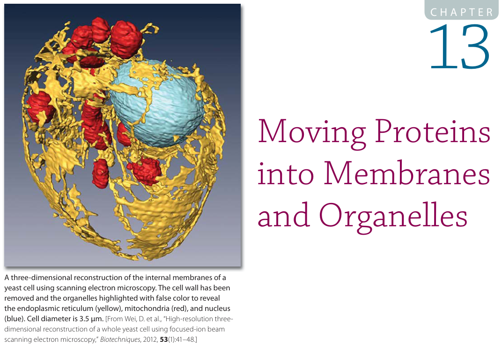
一个典型的哺乳动物细胞含有最多10,000种不同的蛋白质；而一个酵母细胞约含5000种。这些蛋白质绝大多数由胞质溶胶中的核糖体合成，其中许多留存在胞质溶胶内（见第5章）。然而，在一个典型细胞所产生的不同种类蛋白质中，多达一半会被运送到细胞内的各种膜包被细胞器之一或细胞表面。例如，许多受体蛋白和转运蛋白必须被运送到质膜，一些水溶性酶（如RNA和DNA聚合酶）必须被靶向到细胞核，而细胞外基质的组分以及消化酶和多肽信号分子则必须被运送到细胞表面，以便从细胞分泌出去。这些蛋白质以及细胞产生的所有其他蛋白质都必须到达其正确的位置，细胞才能正常行使功能。
新合成蛋白质向其正确细胞目的地的运送通常称为蛋白质靶向或蛋白质分选，它包含两类非常不同的过程：基于信号的靶向和基于囊泡的运输。第一类过程涉及把新合成的蛋白质从细胞质靶向到某个胞内细胞器。靶向可以发生在翻译过程中，也可以发生在蛋白质合成刚完成之后。对于膜蛋白，靶向导致蛋白质插入膜的脂双层；而对于水溶性蛋白，靶向导致整个蛋白质跨膜转位进入细胞器的水性内部。蛋白质被分选到内质网（ER）、线粒体、叶绿体、过氧化物酶体和细胞核，都是通过这一通用过程完成的（图13-1）。
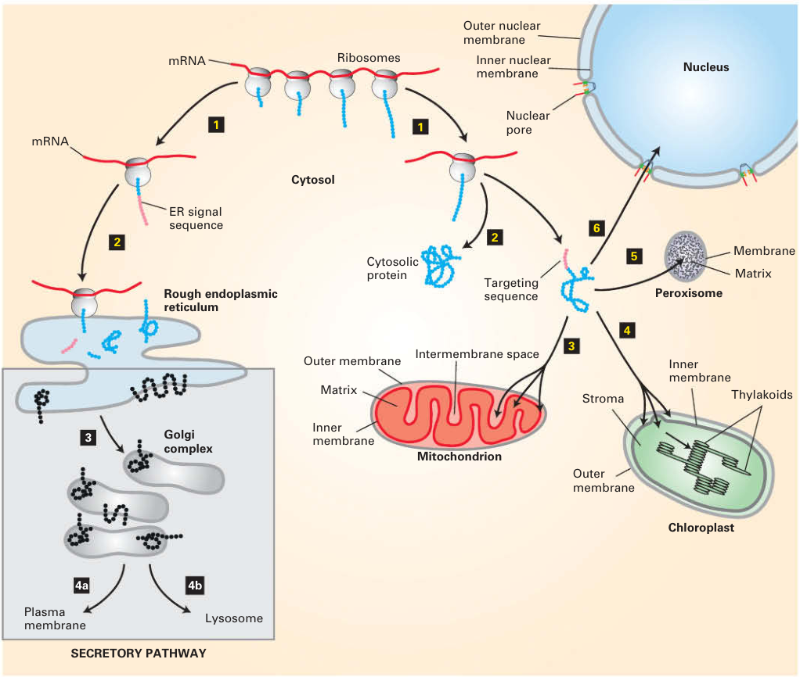
| Cytosol | 胞质溶胶 |
| Ribosomes | 核糖体 |
| mRNA | mRNA |
| Golgi complex | 高尔基复合体 |
| Lysosome | 溶酶体 |
| Secretory pathway | 分泌途径 |
| Rough endoplasmic reticulum | 粗面内质网 |
| Plasma membrane | 质膜 |
| ER signal sequence | ER信号序列 |
| Intermembrane space | 膜间隙 |
| Outer membrane | 外膜 |
| Inner membrane | 内膜 |
| Matrix | 基质 |
| Mitochondrion | 线粒体 |
| Chloroplast | 叶绿体 |
| Thylakoids | 类囊体 |
| Stroma | 基质 |
| Peroxisome | 过氧化物酶体 |
| Nucleus | 细胞核 |
| Nuclear pore | 核孔 |
| Inner nuclear membrane | 内核膜 |
| Outer nuclear membrane | 外核膜 |
| Targeting sequence | 靶向序列 |
| Cytosolic protein | 胞质蛋白 |
第二类通用分选过程称为分泌途径，它涉及蛋白质从ER到其最终目的地的运输，这一运输在膜包被的囊泡内完成。对于许多蛋白质（包括构成细胞外基质的那些蛋白质），最终目的地是细胞外（该途径因此得名）；整合膜蛋白也通过这一过程被运送到高尔基复合体、溶酶体和质膜。分泌途径始于ER；因此所有注定要进入分泌途径的蛋白质最初都被靶向到这一细胞器。
向ER的靶向通常涉及仍在核糖体上合成过程中的新生蛋白质。因此，新生成的蛋白质直接从核糖体挤出进入ER膜。一旦跨ER膜转位，蛋白质就由存在于ER腔中的蛋白质折叠催化剂组装成其天然构象。事实上，一个典型细胞中约三分之一的蛋白质就是在ER中折叠成天然构象的，而大多数驻留ER的蛋白质都直接或间接地参与折叠过程。作为折叠过程的一部分，蛋白质还在ER中经历特定的翻译后修饰。这些过程受到仔细监控，只有在折叠和组装完成之后，蛋白质才被允许从ER运出到其他目的地。最终目的地为高尔基复合体、溶酶体、质膜或细胞外的蛋白质，是沿分泌途径、通过小囊泡的作用被运输的：这些小囊泡从一种细胞器的膜上出芽，然后与另一种细胞器的膜融合（见图13-1，阴影框）。我们将在下一章讨论基于囊泡的蛋白质运输，因为它在机制上与向胞内细胞器的非囊泡型蛋白质靶向有显著差异。
在本章中，我们考察蛋白质如何被靶向到五种胞内细胞器：ER、线粒体、叶绿体、过氧化物酶体和细胞核。这一蛋白质靶向过程有两个特点最初颇为令人困惑：一个特定的蛋白质如何能只被导向某一种特定的膜；以及相对较大的亲水性蛋白质分子如何能跨疏水膜转位，却不破坏双层膜作为离子和小分子屏障的功能。通过把生化纯化方法与用于鉴定无法执行特定转位步骤的突变体的遗传筛选相结合，细胞生物学家已经鉴定出跨各种不同胞内膜转位所需的许多细胞组分。此外，细胞内许多主要的转位过程已通过将其纯化的蛋白质组分掺入人工脂双层而得到重建。这类体外系统可以自由地进行实验操作。
这些研究表明，尽管存在一些差异，但支配蛋白质分选到所有各种胞内细胞器的是相同的基本机制。例如，我们现在知道，把蛋白质靶向到某一特定细胞器目的地的信息编码在蛋白质自身的氨基酸序列中，通常位于一段约20个氨基酸的序列内，这类序列统称为靶向序列（见图13-1）；这些序列也称为信号序列或信号肽。此类靶向序列通常位于蛋白质的N端，因而也是蛋白质中最早被合成的部分。较为少见的是，靶向序列位于C端或蛋白质序列的内部。每种细胞器都带有一套受体蛋白，它们只（直接或间接地）结合特定种类的靶向序列，从而确保由靶向序列编码的信息决定靶向的特异性。一旦含有靶向序列的蛋白质与相应的受体发生相互作用，多肽链就被转移到某种转位通道，使蛋白质能够进入或穿过膜脂双层。蛋白质的单向转移进入细胞器而不滑回细胞质，这一单向性通常是通过把转位与某种能量上有利的过程（如GTP或ATP的水解）相偶联来实现的。有些蛋白质随后还会被进一步分选，以到达靶细胞器内的某个亚区室；这种分选依赖于另外的信号序列和另外的受体蛋白。最后，靶向序列可能被特定的蛋白酶从成熟蛋白质上切除。
对于本章讨论的每一个蛋白质靶向事件，我们都将设法回答四个基本问题：1. 靶向序列的本质是什么？它与其他类型的靶向序列有何区别？
2. 靶向序列的受体是什么？
3. 使蛋白质能跨膜脂双层转移的转位通道结构如何？特别是，该通道是否窄到蛋白质只能以未折叠状态通过，还是能容纳已折叠的蛋白质结构域？
4. 驱动跨膜单向转移的能量来源是什么？
在本章第一部分，我们讨论蛋白质向ER的靶向，包括蛋白质在进入分泌途径时所经历的翻译后修饰。蛋白质向ER的靶向是蛋白质靶向中了解得最清楚的例子，将作为该过程的一般范例。接着我们描述蛋白质向线粒体、叶绿体和过氧化物酶体的靶向。最后，我们讨论蛋白质通过核孔进入和离开细胞核的运输。
13.1 蛋白质向ER膜的靶向与跨膜转运
所有真核细胞都有内质网（ER）。ER是一种迂曲的细胞器，由小管和扁平囊组成，其膜与细胞核的膜连续。ER通常具有非常大的表面积，其膜是细胞脂质合成的场所（见第7章）。ER也是大多数膜蛋白组装的地方，包括质膜以及溶酶体、ER和高尔基复合体的膜蛋白。此外，所有最终将从细胞分泌的可溶性蛋白，以及注定要进入ER腔、高尔基复合体或溶酶体的可溶性蛋白，最初都被运送到ER腔（见图13-1）。由于ER在蛋白质分泌中起着如此重要的作用，我们把流经ER的蛋白质运输途径称为分泌途径。为简便起见，我们将把所有最初靶向到ER的蛋白质都称为分泌蛋白，但请记住，并非所有靶向到ER的蛋白质都真的从细胞分泌出去。
在本章的这一节中，我们讨论蛋白质最初如何被识别为分泌蛋白，以及这类蛋白质如何跨ER膜转位。
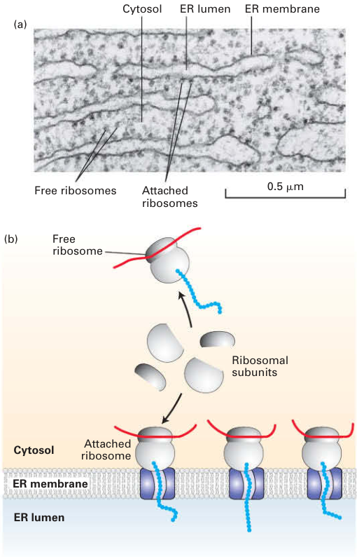
| Attached ribosomes | 附着核糖体 |
| Free ribosomes | 游离核糖体 |
| ER membrane | ER膜 |
| Cytosol | 胞质溶胶 |
| ER lumen | 内质网腔 |
| Ribosomal subunits | 核糖体亚基 |
我们首先讨论可溶性蛋白——即那些完全穿过ER膜进入ER腔的蛋白质。在下一节中，我们讨论整合膜蛋白，它们被插入ER膜中。
用纯化的ER膜进行的脉冲追踪实验证明分泌蛋白会穿过ER膜
尽管所有细胞都分泌多种蛋白质（例如细胞外基质蛋白），但某些类型的细胞专司大量特定蛋白质的分泌。胰腺腺泡细胞就是一个例子，它们合成大量的多种消化酶，这些酶被分泌到通向肠道的导管中。由于这类分泌细胞含有极其丰富的分泌途径细胞器（如ER和高尔基复合体），它们被广泛用于研究这一途径，包括发生在ER膜上的起始步骤。
分泌蛋白合成之后紧接着发生的事件序列，最早是通过用胰腺腺泡细胞进行的脉冲追踪实验阐明的。在这些实验中，放射性标记的氨基酸在分泌蛋白于结合在ER表面的核糖体上合成时被掺入这些蛋白质。ER中接收进入分泌途径的蛋白质的那部分称为粗面ER，因为它密布核糖体，其表面在形态上与其他ER膜明显不同（图13-2）。从这些实验可以清楚地看出，分泌蛋白在核糖体上合成期间或刚合成之后，就跨ER膜转位进入ER腔。
为了厘清转位过程的各个步骤，必须把ER与细胞的其余部分分离开来。完整的ER结构精细如蕾丝，且与其他细胞器相互连接，要分离完整ER并不可行。然而，科学家发现，当细胞被匀浆时，粗面ER会破碎成小的封闭囊泡，核糖体位于外侧，称为微粒体，它们保留了ER的大部分生化特性，包括蛋白质转位的能力。图13-3所示的实验——把从脉冲标记细胞中分离出的微粒体用蛋白酶处理——证明：尽管分泌蛋白是在结合于ER膜胞质面的核糖体上合成的，但这些核糖体产生的多肽最终却位于微粒体的腔内。诸如此类的实验提出了这样的问题：多肽在合成开始后不久是如何被识别为分泌蛋白的，以及新生分泌蛋白是如何被穿引过ER膜的。
疏水性的N端信号序列把新生分泌蛋白靶向到ER
分泌蛋白在胞质溶胶中的游离核糖体上开始合成之后，新生蛋白质中一段16–30个残基的ER靶向序列把核糖体导向ER膜，并启动正在生长的多肽跨ER膜转位（见图13-1，左）。ER靶向序列通常位于蛋白质的N端，一般称为信号序列。不同分泌蛋白的信号序列都含有一个或多个带正电荷的氨基酸，它们与一段连续的6–12个疏水残基（称为疏水核心）相邻，除此之外彼此很少有共同之处。大多数分泌蛋白的信号序列在其仍于核糖体上延伸时就被切除；因此，在细胞中发现的成熟蛋白质里通常不存在信号序列。
ER信号序列的疏水核心对其功能至关重要。例如，从某个信号序列中特异性地缺失若干个疏水氨基酸，或通过突变向疏水核心中引入带电荷的氨基酸，都能破坏蛋白质N端充当信号序列的能力。结果是，被修饰的蛋白质滞留在胞质溶胶中，无法跨ER膜进入ER腔。反过来，也可以把信号序列加到本来位于胞质溶胶的蛋白质上，这要用重组DNA技术来实现。只要所加序列足够长且足够疏水，这样被修饰的胞质蛋白就能获得转位到ER腔的能力。ER信号序列核心中的疏水残基形成一个结合位点，该位点对于信号序列与负责把蛋白质靶向到ER膜的机器之间的相互作用至关重要。
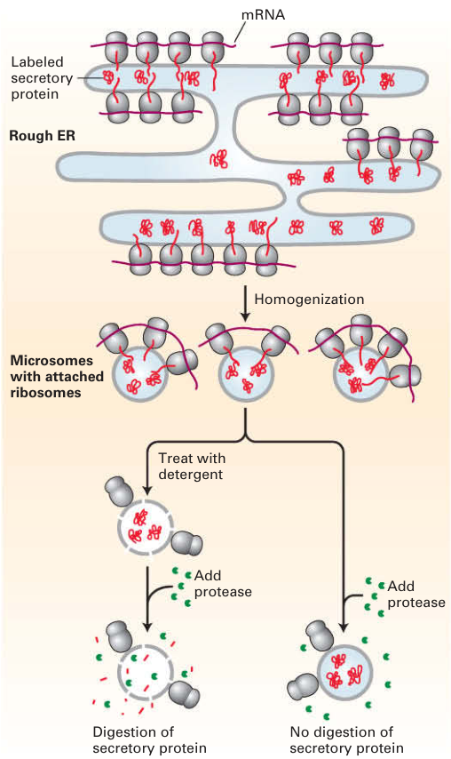
| Rough ER | 粗面ER |
| Microsomes with attached ribosomes | 带附着核糖体的微粒体 |
| Labeled secretory protein | 标记的分泌蛋白 |
| Digestion of secretory protein | 分泌蛋白被消化 |
| No digestion of secretory protein | 分泌蛋白未被消化 |
| Add protease | 加入蛋白酶 |
| Treat with detergent | 用去垢剂处理 |
| Homogenization | 匀浆 |
| mRNA | mRNA |
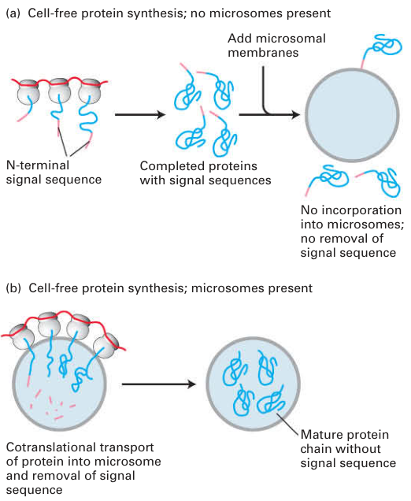
| Cell-free protein synthesis; no microsomes present | 无细胞蛋白质合成；无微粒体 |
| Cell-free protein synthesis; microsomes present | 无细胞蛋白质合成；有微粒体 |
| No incorporation into microsomes; no removal of signal sequence | 未掺入微粒体；信号序列未被切除 |
| Cotranslational transport of protein into microsome and removal of signal sequence | 蛋白质被共翻译转运进微粒体并切除信号序列 |
| Mature protein chain without signal sequence | 无信号序列的成熟蛋白链 |
| Completed proteins with signal sequences | 带信号序列的完整蛋白 |
| N-terminal signal sequence | N端信号序列 |
| Add microsomal membranes | 加入微粒体膜 |
利用无细胞蛋白质合成系统、编码某种分泌蛋白的mRNA，以及被剥离了自身所结合核糖体的微粒体所进行的生化研究，阐明了ER信号序列的功能与去向。用该系统进行的初期实验证明，只有微粒体在蛋白质合成期间存在时，典型的分泌蛋白才会被摄入微粒体并切除其信号序列。如果在蛋白质合成完成之后才把微粒体加入系统，则不会发生蛋白质向微粒体内的运输（图13-4）。
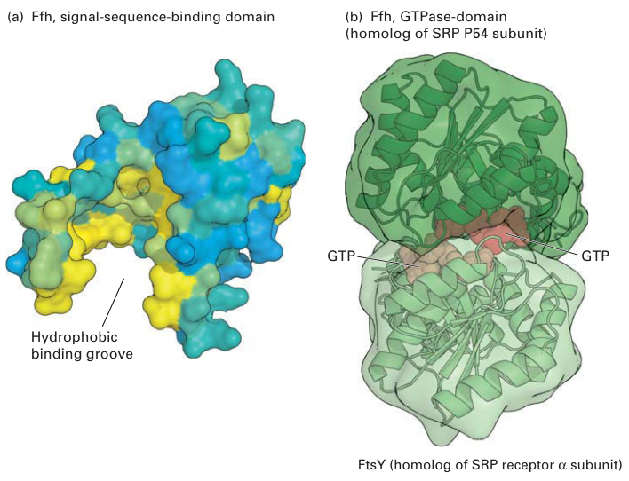
| Hydrophobic binding groove | 疏水结合沟 |
| GTP | GTP |
| Ffh, signal-sequence-binding domain | Ffh信号序列结合结构域 |
| Ffh, GTPase domain (homolog of SRP P54 subunit) | Ffh GTP酶结构域（SRP P54亚基的同源物） |
| FtsY (homolog of SRP receptor α subunit) | FtsY（SRP受体α亚基的同源物） |
随后的实验旨在确定，为了使转位发生，微粒体必须在蛋白质合成的哪个确切阶段存在。在这些实验中，微粒体在蛋白质合成开始后的不同时间被加入反应混合物。这些实验表明，必须在前70个左右氨基酸被翻译之前加入微粒体，完整的分泌蛋白才能定位于微粒体腔中。此时，最初的40个左右氨基酸突出在核糖体之外，其中包括稍后将被切除的信号序列，而接下来的30个左右氨基酸则仍深埋在核糖体内的一个通道中（见图5-26）。因此，大多数分泌蛋白向ER腔的运输在尚未完全合成（新生）的蛋白质仍与核糖体结合时就开始了，这一过程称为共翻译转位。
共翻译转位由两种水解GTP的蛋白质启动
鉴于分泌蛋白是与ER膜结合着合成的，而与其他任何细胞膜都不结合，因此必然存在某种信号序列识别机制把它们靶向到ER膜。这一靶向过程中的两个关键组分是信号识别颗粒（SRP）及其受体。SRP是一种胞质溶胶核糖核蛋白颗粒，它瞬时结合新生蛋白质中的ER信号序列和核糖体大（60S）亚基，形成一个大的复合体。随后，SRP通过与位于膜中的SRP受体结合，把新生蛋白质–核糖体复合体靶向到ER膜。
SRP由六个蛋白质结合到一条300个核苷酸的RNA上构成，这条RNA充当该六聚体的支架。SRP蛋白之一（P54）可以与ER信号序列发生化学交联，这表明正是这个亚基结合新生分泌蛋白中的信号序列。P54中一个称为M结构域的区域含有许多甲硫氨酸以及其他带疏水侧链的氨基酸残基，其中有一个裂隙，其内表面衬着一层疏水侧链（图13-5a）。信号序列的疏水核心通过疏水相互作用结合到这个裂隙中。SRP中的其他多肽与核糖体相互作用，或是蛋白质转位进入ER腔所必需的。
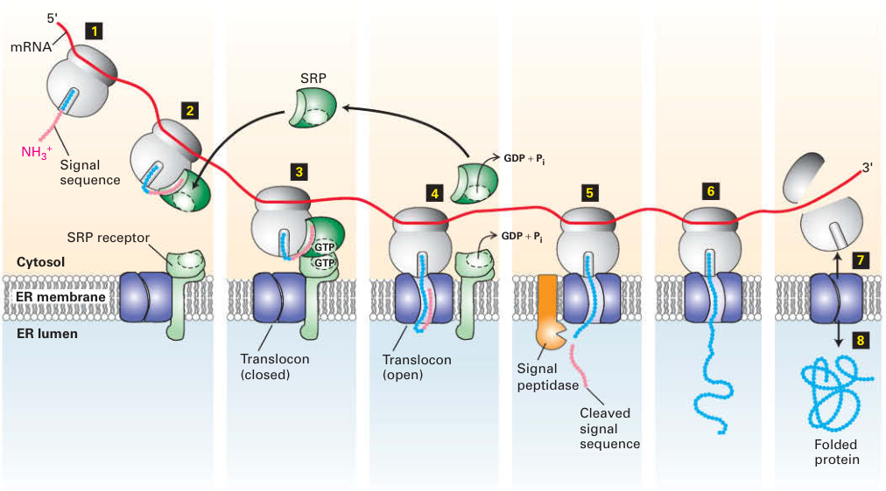
| GTP | GTP |
| mRNA | mRNA |
| Signal sequence | 信号序列 |
| Cleaved signal sequence | 已切除的信号序列 |
| ER lumen | 内质网腔 |
| Cytosol | 胞质溶胶 |
| SRP | 信号识别颗粒 |
| SRP receptor | SRP受体 |
| Signal peptidase | 信号肽酶 |
| Translocon (closed) | 易位子（关闭） |
| Translocon (open) | 易位子（开放） |
| Folded protein | 折叠的蛋白质 |
| GDP | GDP |
| Pi | Pi |
| ER membrane | ER膜 |
SRP与新生多肽链–核糖体复合体通过与SRP受体对接而结合到ER膜上；SRP受体是ER膜的一种整合蛋白，由两个亚基组成：一个α亚基和一个较小的β亚基。当SRP的P54亚基和SRP受体的α亚基都与GTP结合时，SRP–新生链–核糖体复合体与SRP受体的相互作用会增强。来自古菌水生栖热菌的SRP P54亚基和SRP受体α亚基（FtsY）的结构，为GTP结合与水解的循环如何驱动这些蛋白质的结合与解离提供了启示。图13-5b显示，各自结合一分子GTP的P54和FtsY聚到一起，形成一个假对称的异源二聚体。单独的任一个亚基都不含完整的GTP水解活性位点，但当这两个蛋白质聚到一起时，它们形成两个完整的活性位点，能够水解两分子结合的GTP。
图13-6总结了我们目前对分泌蛋白合成以及SRP及其受体在该过程中作用的理解。结合的GTP水解伴随着SRP与SRP受体的解聚，并启动新生链和核糖体向ER膜上某一位点的转移，转位就在该位点发生。在彼此解离之后，SRP及其受体各自释放其结合的GDP，SRP被回收到胞质溶胶中，两者都准备好启动下一轮合成新生分泌蛋白的核糖体与ER膜之间的相互作用。
生长中的多肽穿过易位子由翻译驱动
一旦SRP及其受体把正在合成某种分泌蛋白的核糖体靶向到ER膜，核糖体和新生多肽链便迅速被转移到易位子；易位子是一个蛋白质复合体，形成一条嵌在ER膜内的通道。随着翻译的继续，正在延伸的链从核糖体大亚基直接进入易位子的中央孔。核糖体大亚基的排列与易位子的孔道相对齐，使得生长中的链从不暴露于细胞质，并在到达ER腔之前一直被阻止折叠（见图13-6）。
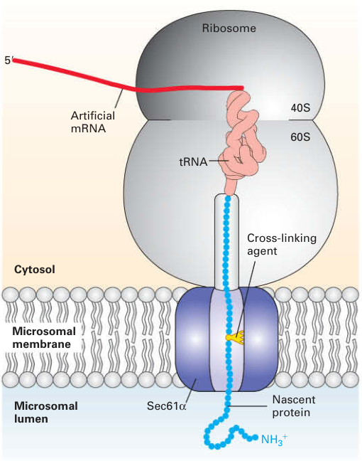
| Cross-linking agent | 交联剂 |
| Nascent protein | 新生蛋白 |
| Cytosol | 胞质溶胶 |
| Microsomal membrane | 微粒体膜 |
| Microsomal lumen | 微粒体腔 |
| Artificial mRNA | 人工mRNA |
| Sec61 | Sec61 |
| Ribosome | 核糖体 |
| tRNA | tRNA |
易位子最初是通过酵母中编码一种名为Sec61α的蛋白质的基因发生突变而被鉴定的，该突变导致分泌蛋白向ER腔的转位受阻。随后发现，有三种蛋白质共同构成哺乳动物易位子，统称为Sec61复合体：Sec61α，一种含有10条跨膜α螺旋的整合膜蛋白；以及两种较小的蛋白质，称为Sec61β和Sec61γ。在无细胞转位系统中进行的化学交联实验——新生分泌蛋白的氨基酸侧链与Sec61α亚基共价结合——证明转位中的多肽链与Sec61α蛋白接触，从而确认它就是易位子的孔道（图13-7）。
当把无细胞转位系统中的微粒体替换为只含SRP受体和Sec61复合体的重建磷脂囊泡时，新生分泌蛋白从其SRP–核糖体复合体转位进入囊泡。这一发现表明，SRP受体和Sec61复合体是转位绝对需要的仅有的两种ER膜蛋白。由于这两种蛋白质都不能水解ATP，也不能以其他方式提供能量来驱动持续进行的转位，因此由核糖体上链延伸所产生的能量似乎就足以推动多肽链朝着一个方向跨膜移动。
易位子必须能够允许多肽链通过，同时又对小分子（如ATP）保持封闭，以维持ER膜的渗透屏障。此外，必定存在某种方式调控易位子，使其在默认状态下关闭，只有当新生多肽链–核糖体复合体结合时才打开。古菌Sec61复合体的高分辨率结构模型展示了易位子如何维持膜的完整性（图13-8）。Sec61α的10条跨膜螺旋形成一条中央通道，转位中的多肽链从其中穿过。Sec61α要接纳转位中的多肽，需要两个不同的门控步骤。这10条跨膜螺旋组织成两个各含5条螺旋的螺旋束。在第一个门控步骤中，两个螺旋束像打开的蛤壳一样绕铰链分开，在开口边缘暴露出一个供信号序列疏水核心结合的疏水结合口袋。信号序列结合到Sec61α上时，其N端朝向胞质溶胶，而延伸中的多肽则折返穿过中央通道。Sec61复合体的结构模型——它是未带转位肽时分离的，因此被推定为处于关闭构象——揭示出一条短螺旋肽堵塞着中央通道。对Sec61复合体的生化研究表明，在没有转位多肽时，构成堵塞物的这条肽有效地封闭易位子，阻止离子和小分子通过。
在第二个门控步骤中，信号序列结合到已打开的通道之后，转位中的肽进入通道的中央孔，把堵塞肽挤开，使转位得以进行。中央孔的中部衬着一圈疏水的异亮氨酸残基，它们实际上形成一个垫圈，即使在转位进行时也能防止小极性分子从转位肽周围渗漏。
当生长中的多肽链进入ER腔时，信号序列被信号肽酶切除；信号肽酶是一种与易位子结合的ER跨膜蛋白（见图13-6，步骤5）。信号肽酶识别信号肽疏水核心C端一侧的序列，并在这条链一旦露出到ER的腔侧空间之后，特异性地在该序列处切断它。信号序列被切除后，生长中的多肽穿过易位子进入ER腔。易位子保持开放，直到翻译完成、整个多肽链都已进入ER腔。转位完成后，堵塞肽回到孔中，重新封闭易位子通道。
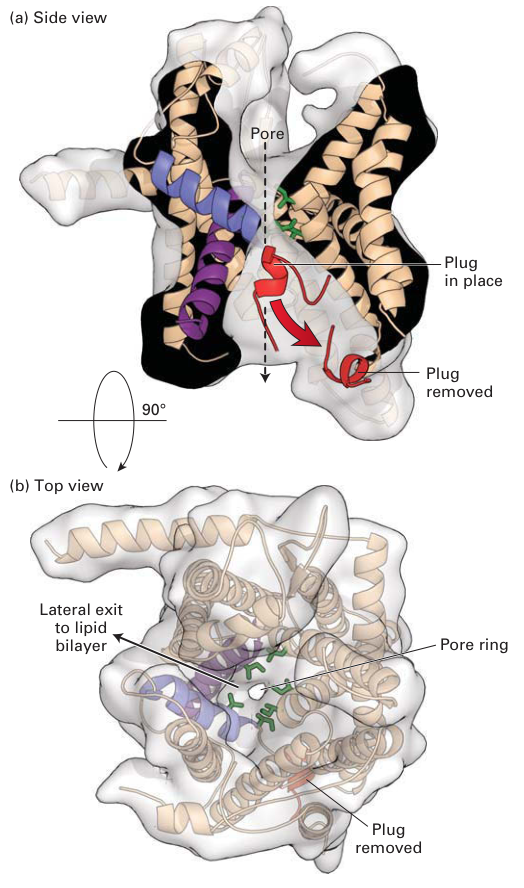
| Top view | 俯视图 |
| Side view | 侧视图 |
| Plug in place | 堵塞物在位 |
| Plug removed | 堵塞物已移开 |
| Pore | 孔 |
| Pore ring | 孔环 |
| Lateral exit to lipid bilayer | 侧向出口通向脂双层 |
ATP水解为酵母中某些分泌蛋白的翻译后转位提供动力
在大多数真核生物中，分泌蛋白通过共翻译转位进入ER。然而在酵母中，有些分泌蛋白在翻译完成之后才进入ER腔。在这种翻译后转位中，转位中的蛋白质穿过与共翻译转位所用相同的Sec61易位子。然而，SRP和SRP受体不参与翻译后转位，在这种情况下，易位子与已完整蛋白质的信号序列之间的直接相互作用似乎就足以把蛋白质靶向到ER膜。此外，跨ER膜单向转位所需的驱动力由一个称为Sec63复合体的额外蛋白质复合体和一个属于Hsp70家族分子伴侣的成员BiP提供（关于分子伴侣的进一步讨论见第3章）。四聚体的Sec63复合体嵌在易位子附近的ER膜中，而BiP位于ER腔内。与其他Hsp70家族成员一样，BiP具有一个肽结合结构域和一个ATP酶结构域。这类分子伴侣结合并稳定未折叠或部分折叠的蛋白质（见图3-17）。
目前关于蛋白质翻译后转位进入ER的模型概述于图13-9。蛋白质的N端片段一旦进入ER腔，信号肽酶就像在共翻译转位中那样切除信号序列（步骤1）。BiP⋅ATP与Sec63复合体腔侧部分的相互作用引起结合的ATP水解，使BiP发生构象变化，从而促进其与暴露的多肽链结合（步骤2）。由于Sec63复合体位于易位子附近，因此BiP在新生多肽能够进入ER的部位被激活。某些实验提示，在不与BiP结合的情况下，未折叠的多肽可以在易位子通道内自由地来回滑动。这种随机的滑动运动很少能使整个多肽跨过ER膜。一分子BiP⋅ADP结合到多肽的腔侧部分，可防止多肽向ER外倒退。随着进一步向内的随机滑动使多肽更多部分暴露在ER膜的腔侧，BiP⋅ADP分子对多肽链的连续结合就像一个棘轮，最终在几秒钟内把整个多肽拉入ER（步骤3和4）。在较慢的时间尺度上，BiP分子自发地将其结合的ADP换成ATP，导致多肽被释放，随后多肽可以折叠成其天然构象（步骤5和6）。回收的BiP⋅ATP则准备好与Sec63再次相互作用。BiP和Sec63复合体也是共翻译转位所必需的。它们在这一过程中的作用细节尚不十分清楚，但据认为它们作用于该过程的早期阶段，例如把信号肽穿引进易位子的孔中。
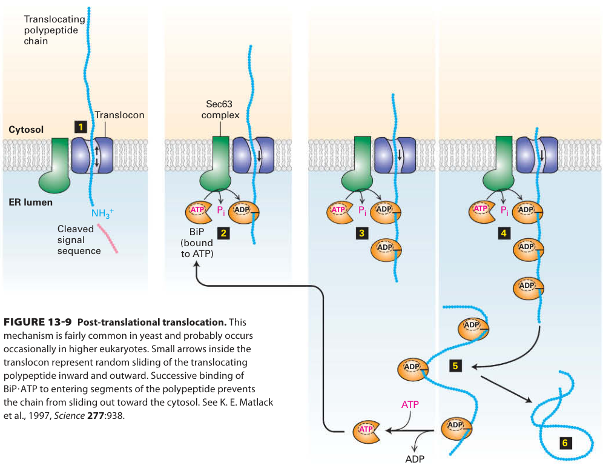
| ATP | ATP |
| ADP | ADP |
| ER lumen | 内质网腔 |
| Cytosol | 胞质溶胶 |
| Cleaved signal sequence | 已切除的信号序列 |
| Translocating polypeptide chain | 转位中的多肽链 |
| Pi | Pi |
| Sec63 complex | Sec63复合体 |
| BiP (bound to ATP) | BiP（结合ATP） |
| Translocon | 易位子 |
BiP所执行的总体反应是一个重要例子，说明ATP水解所释放的化学能如何能驱动蛋白质跨膜的机械运动。细菌细胞也利用一种ATP驱动的过程把已完整的蛋白质跨质膜转位——在这里是为了把蛋白质从细胞中释放出去。在细菌中，转位的驱动力来自一种称为SecA蛋白的胞质溶胶ATP酶。SecA结合到易位子的胞质侧并水解胞质溶胶中的ATP。通过一种类似缝纫机针的机制，SecA蛋白以与ATP水解相偶联的机械循环，把多肽的各个片段推过膜。
正如我们将看到的，蛋白质跨其他真核细胞器膜（如线粒体和叶绿体的膜）的转位通常也以翻译后转位的方式进行。这就解释了为什么这些其他细胞器上通常看不到像粗面ER那样结合的核糖体。
- 分泌蛋白、整合质膜蛋白，以及注定要进入ER、高尔基复合体或溶酶体的蛋白质，其合成都始于胞质溶胶中的核糖体，这些核糖体随后附着到ER膜上，形成粗面ER（见图13-1，左）。
- 新生分泌蛋白上的ER信号序列位于N端，含有一段疏水氨基酸序列。
- 在共翻译转位中，信号识别颗粒（SRP）首先识别并结合新生分泌蛋白上的ER信号序列，随后又被ER膜上的SRP受体结合，从而把新生多肽链–核糖体复合体靶向到ER。
- 随后，SRP和SRP受体介导新生分泌蛋白插入易位子（Sec61复合体）。SRP及其受体水解两分子GTP，导致SRP解离（见图13-5和图13-6）。当附着在易位子上的核糖体继续翻译时，未折叠的蛋白质链被挤出到ER腔中。转位不需要额外的能量。
- 易位子含有一条衬着疏水残基的中央通道，它允许未折叠的蛋白质链通过，同时保持对离子和小亲水分子的封闭。此外，该通道受到门控，只有正在转位多肽时才打开。
- 在翻译后转位中，已完整的分泌蛋白通过信号序列与易位子的相互作用被靶向到ER膜。随后，多肽链由一种棘轮机制拉入ER，该机制需要分子伴侣BiP水解ATP，BiP可稳定进入中的多肽（见图13-9）。在细菌中，翻译后转位的驱动力来自SecA，它是一种胞质溶胶ATP酶，把多肽推过易位子通道。
- 无论在共翻译转位还是翻译后转位中，ER膜中的信号肽酶都在N端进入ER腔后不久就把ER信号序列从分泌蛋白上切除。
13.2 膜蛋白向ER膜的插入
在前几章中，我们已经遇到过遍布细胞的众多整合膜（跨膜）蛋白。每一种这类蛋白相对于膜的磷脂双层都有独特的取向。位于ER、高尔基复合体和溶酶体中以及质膜上的整合膜蛋白，都是在粗面ER上合成的；它们沿着可溶性分泌蛋白所走的同一途径运往最终目的地，在此期间始终嵌在膜中（见图13-1，左）。在这一运输过程中，膜蛋白的取向保持不变；也就是说，该蛋白的某些区段始终朝向胞质溶胶，而另一些区段则始终朝向相反的方向。因此，这些膜蛋白的最终取向是在它们于ER膜上进行生物合成时确立的。本节中，我们先了解整合膜蛋白如何与膜相互作用，然后考察若干类序列——统称为拓扑发生序列——如何指导各种类别的整合膜蛋白插入膜中并决定其取向。这些过程是通过对将可溶性分泌蛋白转位穿过ER膜的基本机制加以修饰而实现的。
整合膜蛋白有若干拓扑类别，均在ER上合成
膜蛋白的拓扑结构指的是它的多肽链跨膜次数以及这些跨膜区段在膜内的取向。决定一个蛋白拓扑结构的关键要素就是跨膜区段本身，它们通常是含有20–25个疏水氨基酸的α螺旋，这些螺旋能在磷脂双层内部的疏水环境中形成能量上有利的相互作用。
大多数整合膜蛋白都属于图13-10所示的五个拓扑类别之一。拓扑类别I、II、III以及尾锚定蛋白都是单次跨膜蛋白，它们只有一个跨膜α螺旋区段。I型蛋白具有可切除的N端ER信号序列，锚定在膜上时其亲水性N端区域位于腔面（又称外质面），亲水性C端区域位于胞质面。II型蛋白不含可切除的ER信号序列，其亲水性N端区域位于胞质面，亲水性C端区域位于外质面（即与I型蛋白相反）。III型蛋白在N端具有一个疏水的跨膜区段，因此与I型蛋白取向相同，但不含可切除的信号序列。最后，尾锚定蛋白在C端有一个疏水区段跨过膜。正如我们稍后会看到的，这些不同的拓扑结构反映了细胞用来确定跨膜区段取向的不同机制。
构成拓扑类别IV的蛋白含有两个或更多跨膜区段，有时被称为多次跨膜蛋白。例如，第11章讨论的许多膜运输蛋白以及第15章介绍的众多G蛋白偶联受体都属于这一类别。
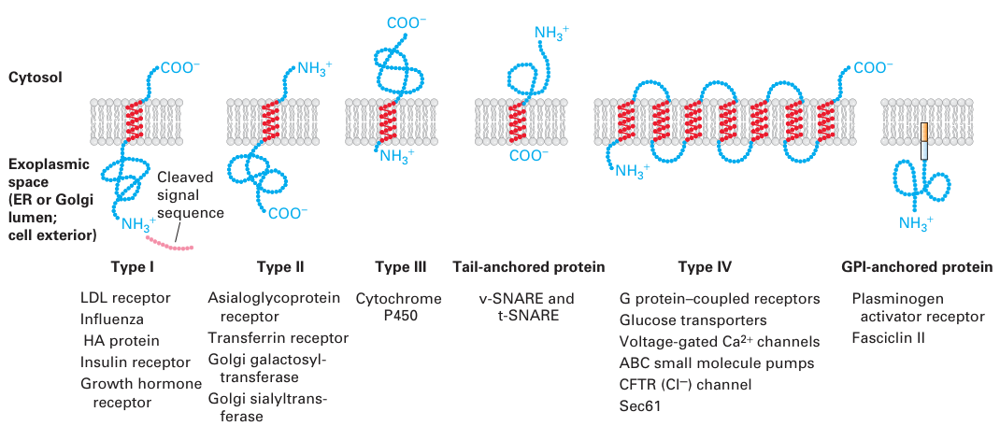
| Cytochrome P450 | 细胞色素P450 |
| Asialoglycoprotein receptor | 去唾液酸糖蛋白受体 |
| Transferrin receptor | 转铁蛋白受体 |
| Golgi galactosyltransferase | 高尔基半乳糖基转移酶 |
| Golgi sialyltransferase | 高尔基唾液酸转移酶 |
| Growth hormone receptor | 生长激素受体 |
| Insulin receptor | 胰岛素受体 |
| LDL receptor | LDL受体 |
| Plasminogen activator receptor | 纤溶酶原激活物受体 |
| GPI-anchored protein | GPI锚定蛋白 |
| Tail-anchored protein | 尾锚定蛋白 |
| G protein-coupled receptors | G蛋白偶联受体 |
| Glucose transporters | 葡萄糖转运蛋白 |
| Voltage-gated Ca2+ channels | 电压门控Ca2+通道 |
| ABC small molecule pumps | ABC小分子泵 |
| CFTR (Cl-) channel | CFTR（Cl-）通道 |
| Sec61 | Sec61 |
| Cleaved signal sequence | 可切除信号序列 |
| Exoplasmic space | 外质空间 |
| Cytosol | 胞质溶胶 |
| Type I | I型 |
| Type II | II型 |
| Type III | III型 |
| Type IV | IV型 |
有些脂锚定膜蛋白也是在ER上合成的。这些膜蛋白完全没有疏水的跨膜区段；取而代之的是，它们连接在一个嵌入膜中的两亲性磷脂锚上（图13-10，右）。
内部停止转移锚定序列与信号锚定序列决定单次跨膜蛋白的拓扑结构
我们从含有单个疏水跨膜区段的整合膜蛋白的插入入手，来讨论膜蛋白的拓扑结构是如何确定的。正如我们将看到的，有三类主要的拓扑发生序列被用来把蛋白导向ER膜并确定其在膜内的取向。我们已经介绍过其中一类，即N端信号序列。另外两类在本节介绍，它们是内部序列，称为停止转移锚定序列和信号锚定序列。与信号序列不同，这两类内部拓扑发生序列在成熟蛋白中会作为跨膜区段存在。不过，这两类序列在膜中的最终取向不同。
I型蛋白 除了具有把它们靶向到ER的N端信号序列外，所有I型跨膜蛋白还都含有一个约22个氨基酸的内部疏水序列，该序列将成为跨膜的α螺旋。新生I型蛋白的N端信号序列与可溶性分泌蛋白的一样，通过SRP与SRP受体的共同作用启动该蛋白的共翻译转位。一旦生长中的多肽的N端进入ER腔，信号序列就被切除，生长中的多肽链继续被挤出、穿过ER膜。然而，当将成为跨膜结构域的那段序列进入易位子时，它使跨膜区段从通道侧向移入膜中，从而停止蛋白通过通道的转移（图13-11）。允许侧向移动的门控机制与易位子开放以接受信号序列的机制相同：Sec61α的两个五螺旋束铰链式打开，使疏水的跨膜区段能够沿着易位子开放的边缘、从疏水的信号序列结合位点旁侧向移出（见图13-8）。当肽以这种方式离开易位子时，跨膜区段的疏水性把它锚定在膜的疏水内部。由于这样的序列既起停止多肽链通过易位子的作用，又会成为膜双层中的疏水跨膜区段，因此它被称为停止转移锚定序列。
一旦转位被打断，翻译仍在核糖体上继续进行，而核糖体此时仍锚定在如今已空置且关闭的易位子上。随着蛋白链C端的合成，它会在膜的胞质面一侧成环伸出。翻译完成后，核糖体从易位子上释放，新合成的I型蛋白的C端仍留在胞质溶胶中。
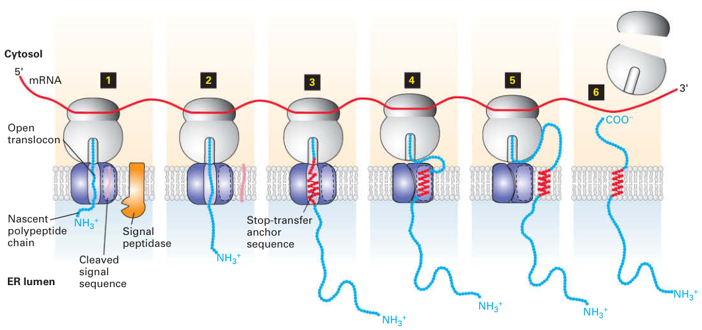
| Signal peptidase | 信号肽酶 |
| Open translocon | 开放的易位子 |
| Stop-transfer anchor sequence | 停止转移锚定序列 |
| Cleaved signal sequence | 可切除信号序列 |
| Nascent polypeptide chain | 新生多肽链 |
| Cytosol | 胞质溶胶 |
| ER lumen | 内质网腔 |
| mRNA | mRNA |
| NH3+ | NH3+ |
| COO- | COO- |
| 5′ | 5′ |
| 3′ | 3′ |
支持这一机制的证据来自这样的研究：把编码各种人生长激素（HGH）受体突变体的cDNA在培养的哺乳动物细胞中表达。野生型HGH受体是一种典型的I型蛋白，能正常运输到质膜。然而，若在单一的跨膜区段中插入带电荷的残基，或把该区段的大部分完全缺失，那么这种突变受体会被全部转位进ER腔，并最终作为可溶性蛋白被细胞分泌出去。这类实验证实，HGH受体以及其他I型蛋白的疏水跨膜区段既起停止转移序列的作用，也起膜锚的作用，阻止蛋白的C端穿过ER膜。
II型与III型蛋白 与I型蛋白不同，II型和III型蛋白缺少可切除的N端ER信号序列。相反，它们都只拥有一个内部疏水的信号锚定序列，它同时起ER信号序列和膜锚的作用。回忆一下，II型和III型蛋白在膜中的取向相反（见图13-10）；这一差异取决于它们各自的信号锚定序列在易位子内所采取的取向。II型蛋白中的内部信号锚定序列把新生多肽链导入ER膜，使链的N端朝向胞质溶胶，所用的是与信号序列相同的、依赖SRP的机制（图13-12a）。不过，这个内部信号锚定序列不被切除，最终会从易位子边缘的信号序列结合位点侧向直接移入磷脂双层，在那里起膜锚的作用。随着延伸继续进行，生长链的C端区域通过易位子被共翻译转位挤出到ER腔中。
就III型蛋白而言，位于N端附近的信号锚定序列把新生链导入ER膜时，使其N端朝向腔面，取向与II型蛋白中的信号锚定序列相反。III型蛋白的信号锚定序列还像一个停止转移序列那样起作用，阻止延伸中的链进一步挤入ER腔（图13-12b）。信号锚定序列C端一侧的链继续延伸，其过程与I型蛋白相同，疏水序列最终侧向移出易位子，把多肽锚定在ER膜中（见图13-11）。
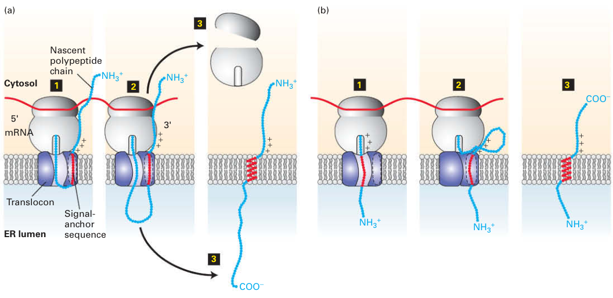
| Signal-anchor sequence | 信号锚定序列 |
| Nascent polypeptide chain | 新生多肽链 |
| Translocon | 易位子 |
| Cytosol | 胞质溶胶 |
| ER lumen | 内质网腔 |
| mRNA | mRNA |
| NH3+ | NH3+ |
| COO- | COO- |
| 5′ | 5′ |
| 3′ | 3′ |
II型与III型蛋白的关键差异在于疏水跨膜区段结合到Sec61α边缘的疏水信号序列结合位点时的取向。决定信号锚定序列取向的最重要特征，是疏水区段一端附近有高密度的带正电荷氨基酸。这些带正电荷的残基倾向于留在膜的胞质侧，而不穿过膜进入ER腔。因此，带电荷残基的位置决定了信号锚定序列在易位子内的取向，也决定了多肽链的其余部分是否继续进入ER腔：II型蛋白倾向于在信号锚定序列的N端一侧带有正电荷残基，使N端朝向胞质溶胶并允许C端一侧进入ER（见图13-12a），而III型蛋白则倾向于在信号锚定序列的C端一侧带有正电荷残基，从而把C端限制在胞质溶胶中（见图13-12b）。要注意的是，II型信号锚定序列的疏水区段在Sec61α中所采取的取向与分泌蛋白的信号序列相同，而且在多数方面，这些信号锚定序列的行为与信号序列完全一样，只不过它们不被切除。
神经氨酸酶是流感病毒表面被膜中的一种II型蛋白，它提供了一个引人注目的实验证据，说明侧翼电荷对决定膜内取向的重要性。神经氨酸酶的内部信号锚定序列N端一侧紧接着有三个精氨酸残基。把这三个带正电荷的残基突变为带负电荷的谷氨酸残基，会使神经氨酸酶获得相反的取向。
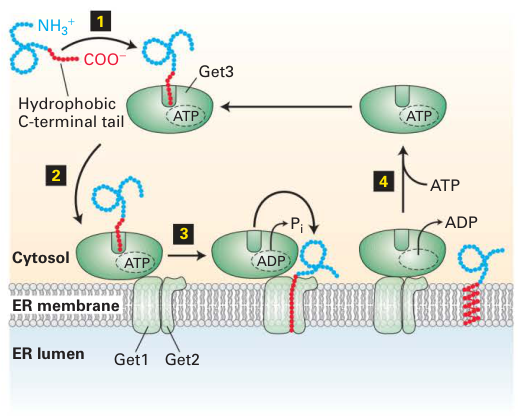
| Get3 | Get3 |
| Get1 | Get1 |
| Get2 | Get2 |
| Hydrophobic C-terminal tail | 疏水C端尾部 |
| Cytosol | 胞质溶胶 |
| ER lumen | 内质网腔 |
| ER membrane | 内质网膜 |
| ATP | ATP |
| ADP | ADP |
| Pi | Pi |
类似的实验表明，其他具有II型或III型取向的蛋白，通过突变内部信号锚定区段两侧的带电荷残基，都能使其在ER膜中的取向发生"翻转"。
尾锚定蛋白 对于我们迄今讨论过的所有拓扑类别的蛋白，插膜都始于SRP识别从核糖体上露出的一段疏水拓扑发生序列。尾锚定蛋白在C端只有一个疏水拓扑发生序列，识别它们面临一个独特的难题，因为疏水的C端只有在翻译完成、蛋白从核糖体上释放之后才可供识别。尾锚定蛋白插入ER膜不使用SRP、SRP受体或易位子，而是依赖一条专为此目的服务的途径，如图13-13所示。这条途径涉及一种称为Get3的ATP酶，它结合尾锚定蛋白的C端疏水区段。Get3与尾锚定蛋白结合形成的复合体被一种称为Get1/Get2的二聚体整合膜受体招募到ER上。尾锚定蛋白从Get3上释放，Get1/Get2的跨膜部分参与把尾锚插入ER膜。这一过程在机制上类似于SRP和SRP受体把II型、III型信号锚定序列靶向到ER的过程。两种靶向过程的一个主要差别是：Get3把尾锚定蛋白的靶向与转移同ATP水解偶联起来，而SRP则把蛋白靶向同GTP水解偶联。此外，SRP受体把SRP-核糖体复合体招募到ER，然后在另一步骤中由易位子把信号锚定序列插入膜；而Get1/Get2显然同时执行这两项功能——把Get3招募到ER膜，并催化把尾锚插入膜双层。
多次跨膜蛋白含有多个内部拓扑发生序列
图13-14总结了单次跨膜和多次跨膜蛋白中拓扑发生序列的排布方式。在多次跨膜（IV型）蛋白中，每个跨膜α螺旋都以我们已讨论过的方式充当拓扑发生序列：它可以指导蛋白靶向ER、把蛋白锚定在ER膜中，或停止蛋白通过膜的转移。多次跨膜蛋白分为两种类型，取决于其N端是伸入胞质溶胶还是伸入外质空间（例如ER腔或细胞外）。这一N端拓扑结构通常由最靠近N端的疏水区段以及其两侧序列的电荷决定。如果IV型蛋白含有偶数个跨膜α螺旋，它的N端和C端将朝向膜的同一侧（图13-14d）。反之，如果IV型蛋白含有奇数个α螺旋，它的两端将具有相反的取向（图13-14e）。
N端位于胞质溶胶中的IV型蛋白 在N端伸入胞质溶胶的多次跨膜蛋白中，有各种葡萄糖转运蛋白（GLUT）以及第11章讨论过的大多数离子通道蛋白。在这些蛋白中，最靠近N端的疏水区段启动新生多肽链插入ER膜，并使N端朝向胞质溶胶；因此这个α螺旋区段的功能类似于II型蛋白的内部信号锚定序列（见图13-12a）。随着第一个α螺旋之后的新生链延伸，它穿过易位子移动，直到第二个疏水α螺旋形成。这个螺旋阻止新生链进一步通过易位子挤出；因此它的功能类似于I型蛋白中停止转移锚定序列的功能（见图13-11）。
前两个跨膜α螺旋合成之后，新生链的两端都朝向胞质溶胶，而它们之间的环则伸入ER腔。新生链的C端随后继续向胞质溶胶中生长，如同I型和III型蛋白合成时那样。第三个跨膜α螺旋充当另一个II型信号锚定序列，第四个则充当另一个停止转移锚定序列（见图13-14d）。显然，一旦多次跨膜多肽的第一个拓扑发生序列开始与易位子结合，核糖体就保持附着在易位子上，此后从核糖体上露出的拓扑发生序列会穿入易位子，不再需要SRP和SRP受体。以一种尚不十分清楚的方式，当新的疏水拓扑发生序列与易位子结合时，先前已结合的序列会侧向移出易位子，所用机制与I型、II型和III型膜蛋白相同。
利用重组DNA技术交换疏水α螺旋的实验，为理解IV-A型多次跨膜蛋白中拓扑发生序列的功能提供了线索。这些实验表明，生长链中各疏水α螺旋彼此的先后次序，在很大程度上决定某一螺旋是起信号锚定序列的作用还是起停止转移锚定序列的作用。除疏水性之外，某一螺旋的具体氨基酸序列对其功能几乎没有影响。因此，N端的第一个α螺旋以及随后的奇数位螺旋起信号锚定序列的作用，而介于其间的偶数位螺旋则起停止转移锚定序列的作用。信号锚定序列与停止转移锚定序列之间的这种奇偶关系取决于这样一个事实：当多次跨膜蛋白来回穿过膜编织而成时，跨膜α螺旋采取交替的取向；信号锚定序列的N端朝向双层的胞质侧，而停止转移锚定序列的N端则朝向双层的外质侧。
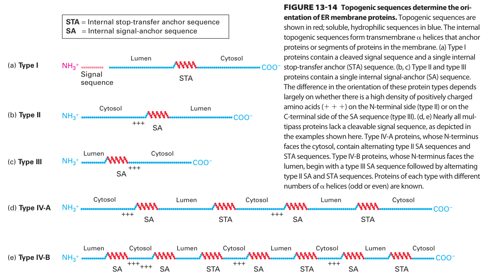
| STA | 内部停止转移锚定序列（STA） |
| SA | 内部信号锚定序列（SA） |
| Signal sequence | 信号序列 |
| Type I | I型 |
| Type II | II型 |
| Type III | III型 |
| Type IV-A | IV-A型 |
| Type IV-B | IV-B型 |
| Lumen | 腔 |
| Cytosol | 胞质溶胶 |
| NH3+ | NH3+ |
| COO- | COO- |
N端位于外质空间中的IV型蛋白 庞大的G蛋白偶联受体家族都含有七个跨膜α螺旋，构成了数量最多的IV-B型蛋白，其N端伸入外质空间。在这类蛋白中，最靠近N端的疏水α螺旋之后往往跟着一簇带正电荷的氨基酸，就像III型信号锚定序列那样（见图13-12b）。结果，新生多肽链被插入易位子时其N端伸入腔中（见图13-14e）。随着链的延伸，它通过交替的II型信号锚定序列和停止转移序列插入ER膜，正如刚才对IV-A型蛋白所描述的那样。
磷脂锚把某些细胞表面蛋白拴在膜上
有些细胞表面蛋白锚定在磷脂双层上，靠的不是一段疏水氨基酸序列，而是靠一个共价连接的两亲性分子——糖基磷脂酰肌醇（GPI）（图13-15a；另见第7章）。这些蛋白的合成和最初锚定到ER膜的方式与I型跨膜蛋白完全相同，由一个可切除的N端信号序列和一个内部停止转移锚定序列指导这一过程（见图13-11）。然而，腔侧结构域中紧邻跨膜结构域的一小段氨基酸序列会被一个位于ER膜内的转酰胺酶识别。这种酶同时切下原来的停止转移锚定序列，并把蛋白的腔侧部分转移到膜中一个预先形成的GPI锚上（图13-15b）。
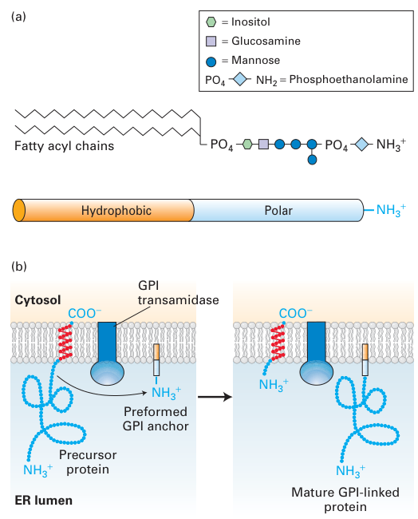
| Preformed GPI anchor | 预先形成的GPI锚 |
| Precursor protein | 前体蛋白 |
| Mature GPI-linked protein | 成熟GPI连接蛋白 |
| GPI transamidase | GPI转酰胺酶 |
| Inositol | 肌醇 |
| Glucosamine | 葡糖胺 |
| Mannose | 甘露糖 |
| Phosphoethanolamine | 磷酸乙醇胺 |
| Fatty acyl chains | 脂肪酰基链 |
| Hydrophobic | 疏水 |
| Polar | 极性 |
| Cytosol | 胞质溶胶 |
| ER lumen | 内质网腔 |
| COO- | COO- |
| NH2 | NH2 |
| NH3 | NH3 |
| PO4 | PO4 |
为什么要用一种膜锚替换另一种？连接GPI锚会使蛋白失去朝向胞质溶胶的亲水结构域，这可能带来若干后果。例如，带GPI锚的蛋白能在磷脂双层的平面内相对快速地扩散。相比之下，许多由跨膜α螺旋锚定的蛋白，由于朝向胞质溶胶的区段与细胞骨架相互作用，其侧向移动在膜中受到阻碍。此外，在某些极化的上皮细胞中，GPI锚会把所连接的蛋白靶向到质膜的顶端结构域（而不是基底外侧结构域），这一点我们将在第14章讨论。
膜蛋白的拓扑结构往往可以从其序列推断出来
正如我们已经看到的，在ER上合成的整合膜蛋白中，各种拓扑发生序列支配着新生多肽链与易位子的相互作用。当科学家开始研究一个功能未知的蛋白时，在相应基因序列中鉴定出可能的拓扑发生序列，可以为该蛋白的拓扑类别和功能提供重要线索。例如，假设某个已知为细胞间信号传递途径所必需的蛋白，其基因中含有编码一个明显的N端信号序列和一个内部疏水序列的核苷酸序列。这些发现提示，该蛋白是一种I型整合膜蛋白，因而可能是针对胞外配体的细胞表面受体。此外，所推断出的I型拓扑结构提示，位于信号序列与内部疏水序列之间的N端区段构成胞外结构域，它很可能参与配体结合；而位于内部疏水序列之后的C端区段可能位于胞质溶胶中，可能参与胞内信号传递。
鉴定拓扑发生序列需要一种方法，能在序列数据库中扫描出疏水性足以充当信号序列或跨膜锚定序列的区段。拓扑发生序列往往可以借助计算机程序来鉴定，这些程序为目标蛋白生成疏水性分布图。第一步是为蛋白中的每个氨基酸赋予一个称为疏水指数的值。按照惯例，疏水氨基酸赋正值，亲水氨基酸赋负值。尽管存在不同的疏水指数标度，但它们都把最正的值赋给侧链主要由烃基残基组成的氨基酸（如苯丙氨酸和甲硫氨酸），把最负的值赋给带电荷的氨基酸（如精氨酸和天冬氨酸）。第二步是找出整体疏水性足以充当N端信号序列或内部停止转移锚定序列的长区段和信号锚定序列。为此，要沿蛋白的全长计算每20个连续氨基酸区段的总疏水指数。把这些计算值对氨基酸序列中的位置作图，就得到疏水性分布图。
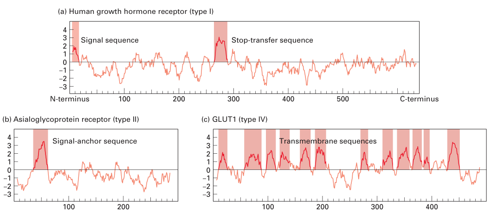
| Human growth hormone receptor (type I) | 人生长激素受体（I型） |
| Asialoglycoprotein receptor (type II) | 去唾液酸糖蛋白受体（II型） |
| GLUT1 (type IV) | GLUT1（IV型） |
| N-terminus | N端 |
| C-terminus | C端 |
| Signal sequence | 信号序列 |
| Stop-transfer sequence | 停止转移序列 |
| Signal-anchor sequence | 信号锚定序列 |
| Transmembrane sequences | 跨膜序列 |
图13-16显示了三种不同膜蛋白的疏水性分布图。这类图中显著的峰可以鉴定出可能的拓扑发生序列及其位置和大致长度。例如，人生长激素受体的疏水性分布图显示，该蛋白的极N端既有一个疏水信号序列，又有一个内部的疏水停止转移锚定序列（图13-16a）。根据这一分布图，我们可以正确地推断出，HGH受体是一种I型整合膜蛋白。去唾液酸糖蛋白受体是一种介导异常胞外糖蛋白清除的细胞表面蛋白，它的疏水性分布图显示出一个显著的内部疏水信号锚定序列，但没有给出存在疏水N端信号序列的任何迹象（图13-16b）。因此我们可以预测，去唾液酸糖蛋白受体是一种II型或III型膜蛋白。信号锚定序列两侧带电荷残基的分布往往能区分这两种可能，因为跨膜区段两侧带正电荷的氨基酸通常朝向膜的胞质面。例如，就去唾液酸糖蛋白受体而言，检查信号锚定序列两侧的残基可以发现，N端一侧的残基带净正电荷，从而正确地预测出这是一种II型蛋白。
GLUT1葡萄糖转运蛋白是一种多次跨膜蛋白，它的疏水性分布图显示出许多疏水性足以成为跨膜螺旋的区段（图13-16c）。这一分布图的复杂性说明，要明确鉴定出多次跨膜蛋白中所有的跨膜区段，以及预测各个信号锚定序列和停止转移锚定序列的拓扑结构，都很困难。人们已经开发出更复杂的计算机算法，把疏水区段附近存在带正电荷氨基酸、以及区段的长度和区段之间的间距都考虑在内。利用所有这些信息，最好的算法能以高于75%的准确率预测多次跨膜蛋白的复杂拓扑结构。
最后，与某个已知蛋白的序列同源性可能有助于准确预测新发现的多次跨膜蛋白的拓扑结构。例如，多细胞生物的基因组编码数量极多的、带有七个跨膜α螺旋的多次跨膜蛋白。这些蛋白之间序列的相似性强烈提示，它们都具有与研究得很充分的G蛋白偶联受体相同的拓扑结构，即N端朝向膜的外质侧，C端朝向膜的胞质侧。
- 在粗面ER上合成的蛋白包括五个拓扑类别的整合膜蛋白，以及一种脂锚定类型（见图13-10）。
- 拓扑发生序列——N端信号序列、内部停止转移锚定序列和内部信号锚定序列——指导新生蛋白插入ER膜并决定其在膜内的取向。在已完成的膜蛋白运输到最终目的地（如质膜）的过程中，这一取向一直保持。
- 单次跨膜蛋白含有一个或两个拓扑发生序列。在多次跨膜蛋白中，每个α螺旋区段都可以充当内部拓扑发生序列，这取决于它在多肽链中的位置以及相邻是否存在带正电荷的残基（见图13-14）。
- 有些细胞表面蛋白最初以I型蛋白的形式合成，但随后被切割，其腔侧结构域被转移到GPI锚上（见图13-15）。
- 膜蛋白的拓扑结构往往可由计算机程序正确预测，这些程序能在氨基酸序列中鉴定出疏水的拓扑发生区段并生成疏水性分布图（见图13-16）。
13.3 内质网中蛋白质的修饰、折叠与质量控制
在粗面内质网（ER）上合成的膜蛋白和可溶性分泌蛋白，在到达最终目的地之前要经历四类主要修饰：（1）在内质网和高尔基复合体中对碳水化合物进行共价加成与加工（糖基化）；（2）在内质网中形成二硫键；（3）在内质网中把多肽链正确折叠，并把多亚基蛋白组装起来；（4）在内质网、高尔基复合体和分泌小泡中进行特定的蛋白水解切割。一般来说，这些修饰促进分泌蛋白折叠成其天然结构，并为暴露于细胞外环境的蛋白质增添结构稳定性。诸如糖基化这样的修饰还使细胞能够在细胞表面产生大量化学性质各异的分子，这些分子是细胞间黏附与通讯中所用的特定分子相互作用的基础。
在粗面内质网上合成并进入内质网腔的蛋白质，绝大多数都通过添加一条或多条糖链而被修饰。带有连接碳水化合物的蛋白质称为糖蛋白。糖蛋白中连接到羟基（–OH）基团（在丝氨酸和苏氨酸残基中）上的糖链称为O-连接寡糖，而连接在天冬酰胺的酰胺氮上的糖链称为N-连接寡糖。O-连接寡糖有若干类型，包括黏蛋白型O-连接链（得名于黏液中所含的丰富糖蛋白）以及第20章所描述的蛋白聚糖上的碳水化合物修饰。O-连接链通常仅由1至4个糖残基组成，呈线性排列，由位于高尔基复合体腔中、称为糖基转移酶的酶加到蛋白质上。更为常见的N-连接寡糖则更大、更复杂，含有若干分支。本节我们着重讨论N-连接寡糖，其最初的合成发生在内质网中。蛋白质在内质网中完成最初的N-糖基化后，寡糖链会在内质网中、并且通常也在高尔基复合体中受到修饰。
二硫键的形成、蛋白质的折叠以及多聚体蛋白的组装都只发生在粗面内质网中，本节也将讨论这些内容。只有正确折叠并组装好的蛋白质，才能从粗面内质网经由分泌途径被运输到高尔基复合体，并最终到达细胞表面或其他最终目的地。未折叠、错误折叠或只部分折叠与组装的蛋白质则被选择性地滞留在粗面内质网中，并被标记以便降解。我们将在本节后半部分讨论这种"质量控制"的几个特征。
如前所述，可溶性分泌蛋白和I型膜蛋白的N端ER信号序列会在内质网中被切除。有些蛋白质还会在高尔基复合体或分泌小泡中经历其他特定的蛋白水解切割。这些切割，以及主要或仅在高尔基复合体中发生的碳水化合物修饰，我们将在下一章讨论。
一条预先形成的N-连接寡糖被加到粗面内质网中的许多蛋白质上
所有N-连接寡糖的生物合成都始于粗面内质网中一条预先形成的、含14个残基的寡糖前体（图13-17）。这一前体的结构在植物、动物和单细胞真核生物中都相同：一条分支寡糖，含有3个葡萄糖（Glc）、9个甘露糖（Man）和2个N-乙酰葡糖胺（GlcNAc）分子，可写作Glc3Man9(GlcNAc)2。一旦加到蛋白质上，这条分支的碳水化合物结构就会在内质网和高尔基复合体中通过添加或移除单糖而被修饰。不同糖蛋白之间以及不同生物之间，N-连接链的修饰各不相同，但在分泌蛋白和膜蛋白上所有N-连接寡糖的结构中，14个残基里有5个所组成的核心是保守的。
在被转移到内质网腔中的新生链上之前，寡糖前体先组装在一个连接于膜的锚上，该锚称为多萜醇磷酸，是一种长链聚异戊二烯脂质（见第7章）。在第一个糖——GlcNAc——通过焦磷酸键连接到多萜醇磷酸上之后，其余糖通过糖苷键在一系列复杂的反应中被加上去，这些反应由附着在粗面内质网膜胞质面或腔面的酶催化（见图13-17）。最终的多萜醇焦磷酸寡糖的取向使寡糖部分朝向内质网腔。
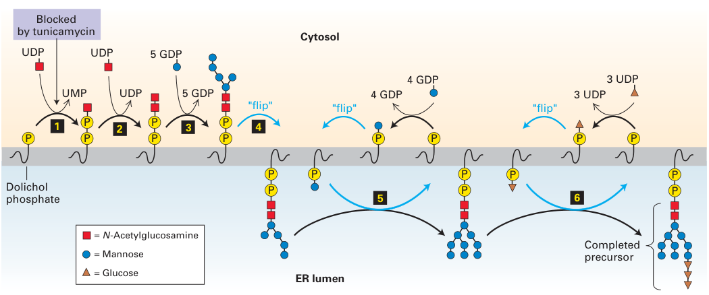
| Dolichol phosphate | 磷酸多萜醇 |
| N-Acetylglucosamine | N-乙酰葡糖胺 |
| Mannose | 甘露糖 |
| Glucose | 葡萄糖 |
| ER lumen | 内质网腔 |
| Cytosol | 胞质溶胶 |
| Blocked by tunicamycin | 被衣霉素阻断 |
| Flip | 翻转 |
| Completed precursor | 完整前体 |
| UDP | UDP |
| UMP | UMP |
| GDP | GDP |
当新生多肽刚露出到内质网腔中时，整条14残基前体便从多萜醇载体转移到新生多肽上的一个天冬酰胺残基（图13-18，步骤1）。只有三肽序列Asn-X-Ser和Asn-X-Thr中的天冬酰胺残基（其中X是除脯氨酸外的任何氨基酸）才是寡糖转移酶的底物，该酶催化这一反应。这种酶的三个亚基中有两个是内质网膜蛋白，其朝向胞质溶胶的结构域与核糖体结合，从而把该转移酶的第三个亚基——催化亚基——定位在内质网腔中正在延伸的多肽链附近。并非所有Asn-X-Ser/Thr序列都会被糖基化，而且仅凭氨基酸序列无法预测哪些潜在的N-连接糖基化位点会被修饰；例如，含Asn-X-Ser/Thr序列的一段蛋白质若快速折叠，就可能阻止寡糖前体转移到其上。
整条前体Glc3Man9(GlcNAc)2被转移到新生多肽上之后，三种不同的酶——称为糖苷酶——立即移除全部三个葡萄糖残基和一个特定的甘露糖残基（图13-18，步骤2–4）。
这三个葡萄糖残基是在多萜醇载体上合成该前体时最后加上的残基，它们似乎充当一个信号，表明该寡糖已经完整、可以转移到蛋白质上了。
寡糖侧链可促进糖蛋白的折叠与稳定性
连接到糖蛋白上的寡糖具有多种功能。例如，有些蛋白质需要N-连接寡糖才能在内质网中正确折叠。这一功能已在抗生素衣霉素的研究中得到证明：衣霉素阻断多萜醇连接的寡糖前体形成的第一步，从而抑制细胞中所有N-连接寡糖的合成（见图13-17，左上）。例如，在衣霉素存在时，流感病毒血凝素前体多肽（HA0）仍能被合成，但无法正确折叠并形成正常的三聚体；此时该蛋白质以错误折叠状态滞留在粗面内质网中。此外，把血凝素序列中某个特定的天冬酰胺突变为谷氨酰胺残基，会阻止N-连接寡糖加到该位点，并使该蛋白质以未折叠状态在内质网中积累。
除了促进正确折叠之外，N-连接寡糖还为许多分泌型糖蛋白赋予稳定性。许多分泌蛋白即使所有N-连接寡糖的添加被阻断（例如用衣霉素处理），也仍能正确折叠并被运输到最终目的地。然而，这类未糖基化的蛋白质已被证明比其糖基化形式更不稳定。例如，纤连蛋白是细胞外基质的正常组分，糖基化的纤连蛋白被组织蛋白酶降解的速度远慢于未糖基化的纤连蛋白。
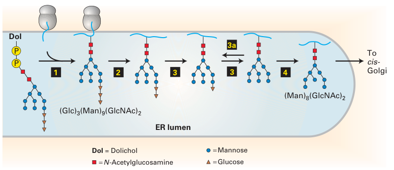
| Dolichol | 多萜醇 |
| N-Acetylglucosamine | N-乙酰葡糖胺 |
| Mannose | 甘露糖 |
| Glucose | 葡萄糖 |
| cis-Golgi | 顺面高尔基体 |
| ER lumen | 内质网腔 |
| Glc3Man9(GlcNAc)2 | Glc3Man9(GlcNAc)2 |
| Man8(GlcNAc)2 | Man8(GlcNAc)2 |
某些细胞表面糖蛋白上的寡糖也在细胞间黏附中发挥作用。例如，白细胞（leukocyte）的质膜含有被大量糖基化的细胞黏附分子（CAM）。这些分子中的寡糖与衬贴在血管内壁的内皮细胞上某些其他CAM中的糖结合结构域相互作用。这种相互作用把白细胞系留在内皮上，并在对感染的炎症反应过程中帮助它们迁移进入组织（见图20-40）。其他细胞表面糖蛋白则具有可诱导免疫应答的寡糖侧链。一个常见的例子是ABO血型抗原，它们是连接在红细胞及其他类型细胞表面的糖蛋白和糖脂上的O-连接寡糖（见图7-20）。在这两种情况下，寡糖都被加到这些膜蛋白的腔面，方式与图13-18中可溶性蛋白所示类似。这些膜蛋白的腔面在拓扑上等同于质膜的外侧面，也就是这些蛋白质最终所处的位置。
二硫键由内质网腔中的蛋白质形成并重排
在第3章中我们了解到，分子内和分子间的二硫键（–S–S–）都有助于稳定许多蛋白质的三级和四级结构。这些共价键通过同一条或不同多肽链上两个半胱氨酸残基的巯基（–SH，又称硫醇基）氧化连接而形成。只有当存在合适的氧化剂时，这一反应才能进行。在真核细胞中，二硫键只在粗面内质网的腔中形成。因此，二硫键只存在于可溶性分泌蛋白以及膜蛋白的外质侧结构域中。胞质溶胶蛋白和在游离核糖体上合成的细胞器蛋白（即那些将运往线粒体、叶绿体、过氧化物酶体等的蛋白质）通常不含二硫键。
内质网腔中二硫键的高效形成依赖于蛋白质二硫键异构酶（PDI），这种酶存在于所有真核细胞中。在肝、胰等器官的分泌细胞的内质网中，这种酶尤为丰富，因为这些细胞产生大量含二硫键的蛋白质。如图13-19a所示，PDI活性位点中的二硫键可通过两次连续的硫醇-二硫键转移反应，很容易地转移到一个蛋白质上。该反应生成的还原型PDI，由一种驻留于内质网的蛋白质Ero1的作用恢复为氧化型；Ero1带有一个可以转移给PDI的二硫键。Ero1自身则通过与扩散进入内质网的分子氧反应而被氧化。
在含有不止一个二硫键的蛋白质中，半胱氨酸残基的正确配对对于正常结构与活性至关重要。当多肽仍在核糖体上延伸时，二硫键通常是在氨基酸序列中先后相邻出现的半胱氨酸之间形成。然而，这种按顺序的形成方式有时会在错误的半胱氨酸之间产生二硫键。例如，胰岛素原——肽类激素胰岛素的前体——有三个二硫键，分别连接半胱氨酸1和4、2和6、3和5。在这种情况下，最初按顺序形成的二硫键（例如半胱氨酸1和2之间的那个）就必须重排，蛋白质才能获得正确的折叠构象。在细胞中，二硫键的重排同样由PDI加速，PDI作用于范围广泛的蛋白质底物，使它们达到热力学上最稳定的构象（图13-19b）。二硫键通常按特定顺序形成，先稳定多肽中的小结构域，再稳定相距较远的区段之间的相互作用；这一现象由下一节讨论的流感血凝素（HA）蛋白的折叠加以说明。
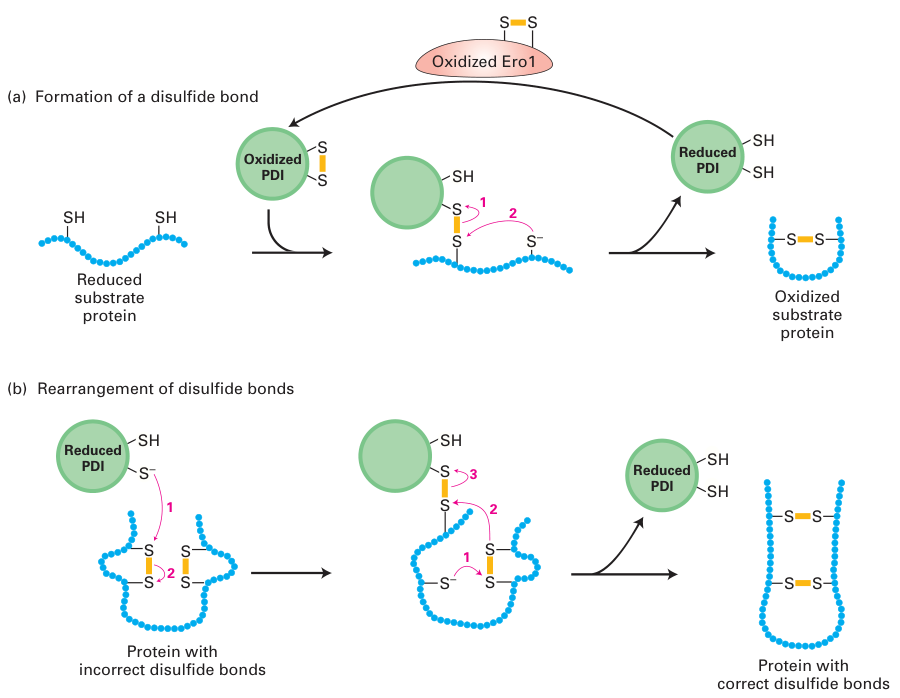
| Formation of a disulfide bond | 二硫键的形成 |
| Rearrangement of disulfide bonds | 二硫键的重排 |
| Oxidized PDI | 氧化型PDI |
| Reduced PDI | 还原型PDI |
| Oxidized substrate protein | 氧化型底物蛋白 |
| Reduced substrate protein | 还原型底物蛋白 |
| Protein with incorrect disulfide bonds | 带有错误二硫键的蛋白质 |
| Protein with correct disulfide bonds | 带有正确二硫键的蛋白质 |
| Oxidized Ero1 | 氧化型Ero1 |
分子伴侣与其他内质网蛋白促进蛋白质的折叠与组装
尽管许多变性蛋白在体外能自发重新折叠成天然状态，但这种重折叠通常需要数小时才能完成。然而，内质网中产生的蛋白质一般在合成后几分钟内就折叠成正确构象。这些新合成蛋白质在细胞中的快速折叠，依赖于内质网腔内若干蛋白质的依次作用。我们已经看到，分子伴侣BiP如何在酵母中驱动翻译后转位：它在完全合成好的多肽进入内质网时与之结合（见图13-9）。在共翻译转位过程中，BiP也能短暂地结合到进入内质网的新生多肽链上。结合上去的BiP被认为可以防止新生链的各个区段发生错误折叠或形成聚集体，从而促进整条多肽折叠成正确构象。PDI也对正确折叠有所贡献，因为在许多蛋白质中，正确的三维构象是由二硫键稳定的。
如图13-20所示，另外两种内质网蛋白——同源的凝集素（碳水化合物结合蛋白）钙联蛋白和钙网蛋白——选择性地结合到正在延伸的多肽链上的某些N-连接寡糖。这两种蛋白质的配体由内质网腔中一种特定的葡萄糖基转移酶生成，它类似于N-连接寡糖前体，但只有一个葡萄糖残基[Glc1Man9(GlcNAc)2]（见图13-18，步骤3a）。
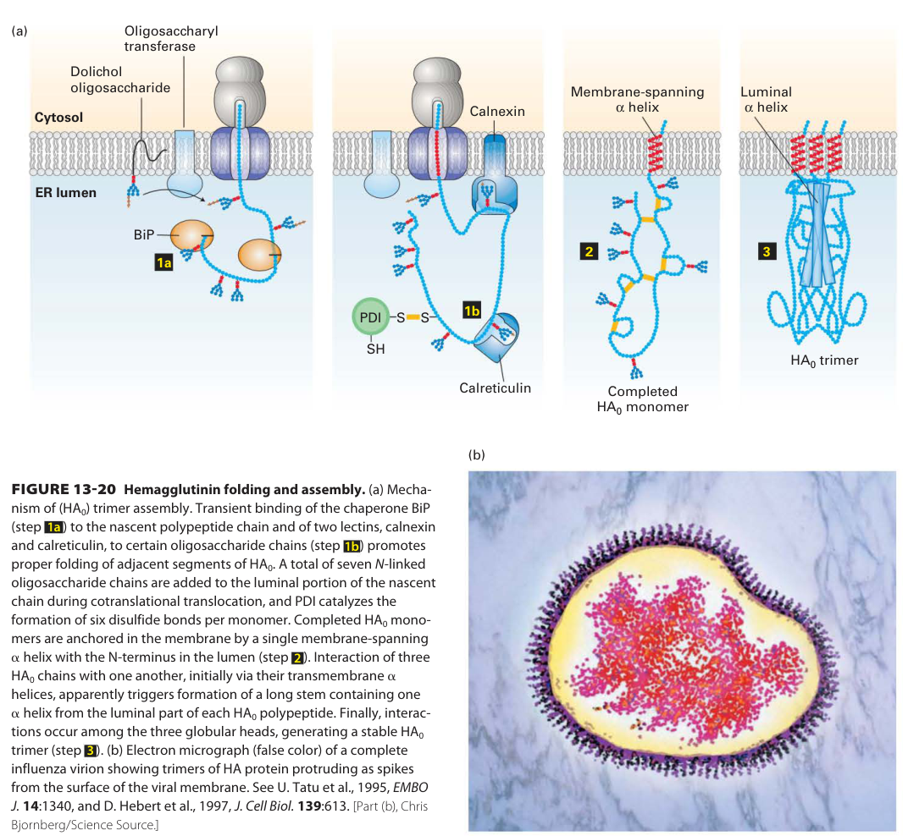
| Membrane-spanning α helix | 跨膜α螺旋 |
| Luminal α helix | 腔侧α螺旋 |
| Completed HA0 monomer | 组装完成的HA0单体 |
| HA0 trimer | HA0三聚体 |
| Calnexin | 钙联蛋白 |
| Calreticulin | 钙网蛋白 |
| ER lumen | 内质网腔 |
| Oligosaccharyl transferase | 寡糖转移酶 |
| Dolichol oligosaccharide | 多萜醇寡糖 |
| BiP | 免疫球蛋白重链结合蛋白（BiP） |
| PDI | 蛋白质二硫键异构酶（PDI） |
| Cytosol | 胞质溶胶 |
这种酶只作用于未折叠或错误折叠的多肽链；就此而言，葡萄糖基转移酶充当确保内质网中蛋白质折叠质量控制的若干主要监视机制之一。未折叠的蛋白质常常暴露出一些疏水区段，这些区段在正确折叠状态下被埋藏在蛋白质的疏水核心中。葡萄糖基转移酶大概是通过结合这些暴露的疏水区段来识别未折叠蛋白的。钙联蛋白和钙网蛋白结合到带有葡萄糖基化N-连接寡糖标记的未折叠新生链上，可防止蛋白质在内质网上合成时其相邻区段发生聚集。因此，钙联蛋白和钙网蛋白像BiP一样，有助于防止新合成蛋白质的某些区段过早地错误折叠。
内质网腔中另外一些重要的蛋白质折叠催化剂是肽基脯氨酰异构酶，这一家族的酶能加速多肽未折叠区段中脯氨酸残基处绕肽基-脯氨酰键的旋转：这类异构化有时是蛋白质结构域折叠中的限速步骤。许多肽基脯氨酰异构酶能不加区分地催化众多蛋白质中暴露的肽基-脯氨酰键的旋转，但有些酶具有非常特定的蛋白质底物。
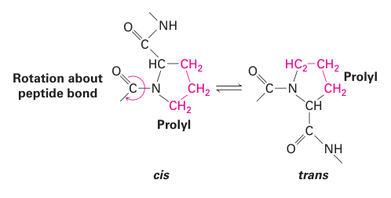
在粗面内质网上合成的许多重要的可溶性分泌蛋白和膜蛋白，由两个或多个多肽亚基构成。在所有情况下，构成这些多亚基（多聚体）蛋白的亚基的组装都发生在内质网中。免疫球蛋白含有两条重链（H）和两条轻链（L），全部通过链内二硫键连接，就是以这种方式组装的。血凝素（HA）是另一种多聚体蛋白，为折叠和亚基组装提供了很好的例证（见图13-20）。这种三聚体蛋白形成从流感病毒颗粒表面突出的刺突。HA三聚体在受感染宿主细胞的内质网内，由三份称为HA0的前体蛋白形成，HA0含有一个跨膜的α螺旋。在高尔基复合体中，三个HA0蛋白各被切割成两条多肽，即HA1和HA2；因此，最终位于病毒表面的每个HA分子都含有三份HA1和三份HA2（见图3-11）。该三聚体由组成它的多肽的大外质侧结构域之间的相互作用所稳定，这些结构域伸入内质网腔；HA被运输到细胞表面后，这些结构域则伸入细胞外空间。HA亚基中较小的胞质溶胶部分与跨膜部分之间的相互作用也有助于稳定该三聚体蛋白。研究表明，HA0多肽仅需10分钟就能折叠并组装成正确的三聚体构象。
内质网中错误折叠的蛋白质诱导蛋白质折叠催化剂的表达
在粗面内质网上合成的野生型蛋白质，在达到完全折叠的构象之前无法离开这一区室。同样，几乎所有妨碍蛋白质在内质网中正确折叠的突变，也会阻断该蛋白质从内质网腔或膜向高尔基复合体的移动。把未折叠或未完全折叠的蛋白质滞留在内质网内的机制，可能通过使中间形态保持在折叠催化剂附近，从而提高折叠的总体效率，而折叠催化剂在内质网中最为丰富。滞留在内质网中的错误折叠蛋白质通常可见与内质网分子伴侣BiP和钙联蛋白结合。因此，这些腔内的折叠催化剂执行两项相关的功能：通过防止正常蛋白质聚集来协助其折叠，以及结合错误折叠的蛋白质把它们滞留在内质网中。
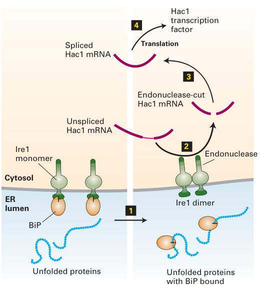
| Unspliced Hac1 mRNA | 未剪接的Hac1 mRNA |
| Spliced Hac1 mRNA | 已剪接的Hac1 mRNA |
| Endonuclease-cut Hac1 mRNA | 被内切核酸酶切割的Hac1 mRNA |
| ER lumen | 内质网腔 |
| Endonuclease | 内切核酸酶 |
| Ire1 monomer | Ire1单体 |
| Ire1 dimer | Ire1二聚体 |
| Unfolded proteins | 未折叠蛋白 |
| Unfolded proteins with BiP bound | 结合了BiP的未折叠蛋白 |
| Hac1 transcription factor | Hac1转录因子 |
| BiP | 免疫球蛋白重链结合蛋白（BiP） |
| Translation | 翻译 |
| Cytosol | 胞质溶胶 |
哺乳动物细胞和酵母都会对粗面内质网中出现未折叠蛋白作出反应，即提高若干个编码内质网分子伴侣和其他折叠催化剂的基因的转录。这一未折叠蛋白反应的一个关键参与者是Ire1，它是一种内质网膜蛋白，既以单体形式存在，也以二聚体形式存在。二聚体形式，而不是单体形式，能促进Hac1的形成，Hac1是酵母中的一种转录因子，可激活未折叠蛋白反应中所诱导基因的表达。如图13-21所示，BiP结合到单体Ire1的腔侧结构域上会阻止Ire1二聚体的形成。因此，内质网腔中游离BiP的数量决定了单体与二聚体Ire1的相对比例。未折叠蛋白在内质网腔中积累会螯合BiP分子，使其无法与Ire1结合。结果，二聚体Ire1的水平升高，导致Hac1水平升高，并产生有助于蛋白质折叠的蛋白质。
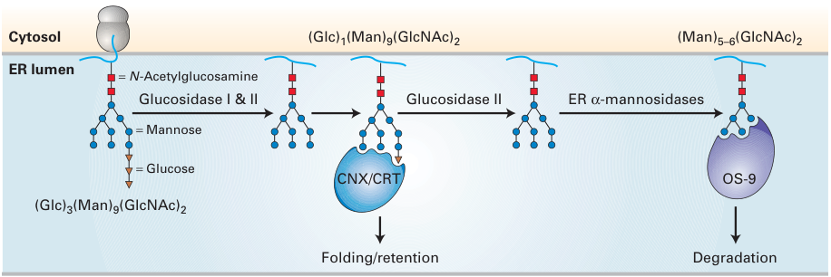
| N-Acetylglucosamine | N-乙酰葡糖胺 |
| Mannose | 甘露糖 |
| Glucose | 葡萄糖 |
| Folding/retention | 折叠/滞留 |
| Glucosidase I & II | 葡糖苷酶I和II |
| Glucosidase II | 葡糖苷酶II |
| ER α-mannosidases | 内质网α-甘露糖苷酶 |
| ER lumen | 内质网腔 |
| Cytosol | 胞质溶胶 |
| CNX/CRT | 钙联蛋白/钙网蛋白（CNX/CRT） |
| Degradation | 降解 |
| OS-9 | OS-9 |
| Glc3Man9(GlcNAc)2 | Glc3Man9(GlcNAc)2 |
| Glc1Man9(GlcNAc)2 | Glc1Man9(GlcNAc)2 |
| Man5–6(GlcNAc)2 | Man5–6(GlcNAc)2 |
哺乳动物细胞还有一条额外的调控途径，响应内质网中的未折叠蛋白而发挥作用。在这条途径中，未折叠蛋白在内质网中的积累会触发ATF6的蛋白水解，ATF6是内质网膜中的一种跨膜蛋白，切割位点位于其跨膜区段内。蛋白水解释放出的ATF6胞质溶胶结构域随后移动到细胞核，在那里刺激编码内质网分子伴侣的基因转录。通过这种受调控的膜内蛋白水解来激活转录因子，也见于Notch信号途径以及胆固醇响应性转录因子SREBP的激活过程中（见图16-36和图16-38）。
一种遗传性肺气肿说明了内质网中蛋白质错误折叠可能带来的有害后果。这种疾病由α1-抗胰蛋白酶的一个点突变引起，该蛋白通常由肝细胞和巨噬细胞分泌。野生型蛋白结合并抑制胰蛋白酶以及血液蛋白酶弹性蛋白酶。在缺乏正常α1-抗胰蛋白酶的情况下，弹性蛋白酶会降解肺内参与氧吸收的精细组织，最终产生肺气肿的症状。虽然突变的α1-抗胰蛋白酶是在粗面内质网上合成的，但它不能正确折叠，形成一种几乎呈结晶状的聚集体，无法从内质网输出。在肝细胞中，随着粗面内质网被聚集的α1-抗胰蛋白酶充满，其他蛋白质的分泌也受到损害。■
内质网中未组装的或错误折叠的蛋白质常被运往胞质溶胶进行降解
错误折叠的可溶性分泌蛋白和膜蛋白，以及多聚体蛋白中未组装的亚基，常常在粗面内质网中合成后一两小时内被降解。最初人们认为，内质网腔中的蛋白水解酶催化错误折叠或未组装多肽的降解，但从未发现过这类蛋白酶。较新的研究表明，错误折叠的分泌蛋白被特定的内质网膜蛋白识别，并通过一种称为脱位的过程被靶向运出内质网腔、进入胞质溶胶。
错误折叠蛋白的脱位和降解依赖于一组位于内质网膜和胞质溶胶中的蛋白质，它们执行三项基本功能。第一项功能是识别错误折叠的蛋白质。一种识别机制涉及由位于内质网中的甘露糖苷酶对N-连接糖链进行修剪（图13-22）。结构为Man5–6(GlcNAc)2的修剪后聚糖被一种称为OS-9的蛋白质识别，OS-9把修剪过的糖蛋白靶向送去除位。EDEM和OS-9都能把修剪过的糖蛋白靶向送去除位。目前尚不清楚内质网α-甘露糖苷酶究竟如何把不能正确折叠、因而成为脱位过程合法底物的蛋白质，与那些在获得完全折叠构象过程中具有短暂部分折叠状态的正常蛋白质区分开来。一种可能是，内质网α-甘露糖苷酶作用缓慢，因此只有那些在内质网腔中保持错误折叠状态足够长时间的糖蛋白才被修剪，从而被靶向送去降解。完全不含寡糖的腔内蛋白质同样能被靶向送去降解，这表明一定还存在其他识别未折叠蛋白的过程。那些其他机制不可能涉及N-连接寡糖的修剪，因为完全不含N-连接寡糖的错误折叠膜蛋白仍然能被靶向送去降解。
错误折叠蛋白脱位所需的第二项功能，是把被标记的蛋白质从内质网腔运过内质网膜、送入胞质溶胶。一个由至少四种整合膜蛋白组成的复合体——称为ERAD（内质网相关降解）复合体——使错误折叠蛋白能够跨内质网膜脱位。错误折叠蛋白穿越内质网膜的机制尚不清楚，但没有证据表明ERAD复合体形成用于脱位的蛋白质通道；脱位可能涉及胞质溶胶中强力的牵拉与解折叠蛋白机器，它们直接把错误折叠的蛋白质拖过脂双层。
最后，当脱位多肽的各个区段暴露到胞质溶胶中时，它们会遇到使其降解的胞质溶胶酶。其中一种酶是p97，它属于一个称为AAA ATP酶家族的蛋白质家族，该家族把ATP水解的能量与蛋白质复合体的解体偶联起来。在多肽从内质网脱位的过程中，p97水解ATP可能提供驱动力，把错误折叠的蛋白质从内质网膜拉入胞质溶胶。当错误折叠的蛋白质进入胞质溶胶时，作为ERAD复合体组分的特定泛素连接酶把泛素残基加到脱位的肽上。与p97的作用一样，泛素化反应也与ATP水解偶联；这种能量的释放也可能有助于把蛋白质捕获在胞质溶胶中。由此产生的多聚泛素化多肽此时已完全位于胞质溶胶中，它们通过在蛋白酶体中的降解而被从细胞中彻底清除。多聚泛素化在把蛋白质靶向到蛋白酶体中的作用，将在第3章更详细地讨论（见图3-31和图3-36）。
- 所有N-连接寡糖都连接在天冬酰胺残基上，它们含有一个由两个N-乙酰葡糖胺和至少三个甘露糖残基组成的核心，通常还有若干分支。O-连接寡糖连接在丝氨酸或苏氨酸残基上，一般较短，往往只含1至4个糖残基。
- N-连接寡糖的形成始于一条保守的14残基高甘露糖寡糖前体在多萜醇上的组装，多萜醇是粗面内质网膜中的一种脂质（见图13-17）。这条预先形成的寡糖被转移到内质网腔中新生多肽链的特定天冬酰胺残基上之后，三个葡萄糖残基和一个甘露糖残基被移除（见图13-18）。
- 寡糖侧链可协助糖蛋白的正确折叠，帮助保护成熟蛋白质免受蛋白水解，参与细胞间黏附，并作为抗原发挥功能。
- 二硫键被加到许多可溶性分泌蛋白以及膜蛋白的外质侧结构域上，这一过程在内质网中发生。存在于内质网腔中的蛋白质二硫键异构酶（PDI）既催化二硫键的形成，也催化其重排（见图13-19）。
- 分子伴侣BiP、凝集素钙联蛋白和钙网蛋白以及肽基脯氨酰异构酶共同作用，确保新合成的分泌蛋白和膜蛋白在内质网中正确折叠。多聚体蛋白的亚基也在内质网中组装（见图13-20）。
- 只有正确折叠的蛋白质和组装好的亚基才以囊泡形式从粗面内质网运输到高尔基复合体。
- 异常折叠的蛋白质和未组装的亚基在内质网中积累，可通过未折叠蛋白反应诱导内质网蛋白质折叠催化剂表达增加（见图13-21）。
- 内质网中未组装或错误折叠的蛋白质常被运回胞质溶胶，在那里经泛素-蛋白酶体途径降解（见图13-22）。
13.4 蛋白质向线粒体与叶绿体的靶向
在本章的其余部分，我们考察在胞质溶胶核糖体上合成的蛋白质如何被分选到各个分立的细胞器：线粒体、叶绿体、过氧化物酶体和细胞核（见图13-1）。线粒体和叶绿体是密切相关的细胞器，它们含有一个内部腔室，称为基质，被双层膜所包围。相比之下，我们接下来讨论的过氧化物酶体只由单层膜包被，只有一个腔侧的基质区室。蛋白质进出细胞核的转运机制在许多方面不同于向其他细胞器的分选，将在本章最后一节讨论。
除由两层膜包被之外，线粒体和叶绿体还具有相似类型的电子传递蛋白，并使用F类ATP酶来合成ATP（见图12-30）。值得注意的是，革兰氏阴性菌也具备这些特征。此外，与细菌细胞一样，线粒体和叶绿体含有自己的DNA，它编码细胞器的rRNA、tRNA和某些蛋白质（见第8章）。而且，线粒体和叶绿体的生长与分裂并不与核分裂相偶联。相反，这些细胞器通过掺入细胞内的蛋白质和脂质而生长，新的细胞器由已有的细胞器分裂形成。这些与自由生活的细菌细胞之间的大量相似性，使人们认识到线粒体和叶绿体起源于细菌被并入祖先真核细胞之时，形成内共生细胞器（见图12-7）。线粒体、叶绿体和细菌所共有的大量膜转位蛋白在序列上的相似性，为这一古老的进化关系提供了最有力的证据。在本节中，我们详细考察这些膜转位蛋白。
由线粒体DNA或叶绿体DNA编码的蛋白质在细胞器内的核糖体上合成，并在合成后立即被导向亲本细胞器内正确的亚区室。然而，位于线粒体和叶绿体中的大多数蛋白质由细胞核中的基因编码，在胞质溶胶中合成之后被输入细胞器。显然，随着真核细胞在十亿多年间不断进化，这些内共生细胞器中祖先细菌DNA的大部分遗传信息，通过某种未知机制转移到了细胞核中。在胞质溶胶中合成、目的地为线粒体基质或叶绿体中与之相当的空间（即基质）的那些前体蛋白，通常含有特异的N端靶向序列，这些序列决定其与细胞器表面受体蛋白的结合。一般来说，蛋白质一旦到达线粒体基质或叶绿体基质，这些序列就会被切除。显然，这些靶向序列在位置和一般功能上都与那些引导新生蛋白进入内质网腔的信号序列相似。尽管这三类信号共有某些序列特征，但它们的具体序列差异相当大，如表13-1所总结。
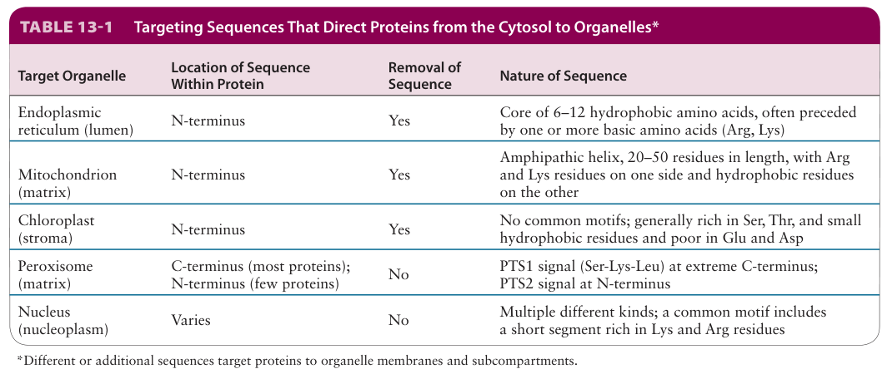
| Target Organelle | 靶向细胞器 |
| Location of Sequence | 序列位置 |
| Removal of Sequence | 序列的切除 |
| Nature of Sequence | 序列的性质 |
| Endoplasmic reticulum (lumen) | 内质网（腔） |
| Mitochondrion | 线粒体 |
| Chloroplast | 叶绿体 |
| Peroxisome | 过氧化物酶体 |
| Nucleus | 细胞核 |
| N-terminus | N端 |
| C-terminus | C端 |
| Amphipathic helix | 两亲性螺旋 |
| PTS1 signal | PTS1信号 |
| PTS2 signal | PTS2信号 |
| Varies | 不定 |
在线粒体和叶绿体中，蛋白质输入都需要能量，并且发生在细胞器外膜与内膜直接接触的部位。由于线粒体和叶绿体含有多层膜以及由膜界定的多个空间，把许多蛋白质分选到其正确位置需要两个靶向序列和两个膜结合转位系统的依次作用：一个把蛋白质导入细胞器，另一个把它导入正确的细胞器亚区室或膜。正如我们将看到的，把各种蛋白质分选到线粒体和叶绿体的机制，与前面讨论过的某些机制相关。
两亲性N端靶向序列把蛋白质导向线粒体基质
所有从胞质溶胶运往线粒体同一目的地的蛋白质，其靶向信号都共有一些共同的基序，尽管这些信号序列并不完全相同。因此，识别这类信号的受体能够与若干不同但相关的序列结合。研究得最充分的把蛋白质定位到线粒体的序列是基质靶向序列。这些序列位于N端，通常长20–50个氨基酸。它们富含疏水性氨基酸、带正电荷的碱性氨基酸（精氨酸和赖氨酸）以及被羟化的氨基酸（丝氨酸和苏氨酸），但往往缺少带负电荷的酸性残基（天冬氨酸和谷氨酸）。
线粒体基质靶向序列被认为采取α螺旋构象，其中带正电荷的氨基酸主要分布在螺旋的一侧而疏水性氨基酸在另一侧。像这样同时含有疏水区和亲水区的序列被称为两亲性。破坏这些序列两亲性的突变通常会破坏向基质的靶向，而许多其他氨基酸替换则不会。这些发现表明，基质靶向序列的两亲性对其功能至关重要。
图13-23所示的离体（无细胞）分析已被广泛用来确定线粒体前体蛋白输入过程中的生化步骤。从细胞中提取的进行呼吸（有能量供应）的线粒体，能够摄入那些在无线粒体存在时合成、但携带适当靶向序列的线粒体前体蛋白。前体成功掺入细胞器可以通过其对所加蛋白酶（如胰蛋白酶）消化的抗性来检测。在其他分析中，前体蛋白的成功输入可以通过特异性线粒体蛋白酶对N端靶向序列的正确切除来显示。在该系统中，细胞器对完全预先生成的线粒体前体蛋白的摄取，与分泌蛋白向ER的离体共翻译转位形成对照：后者一般只有在合成过程中存在微粒体（来源于ER的）膜时才会发生（见图13-4）。
线粒体蛋白质输入需要外膜受体和两层膜中的易位子
图13-24概述了蛋白质从胞质溶胶输入线粒体基质的过程，这是大多数被输入蛋白进入线粒体所走的途径。
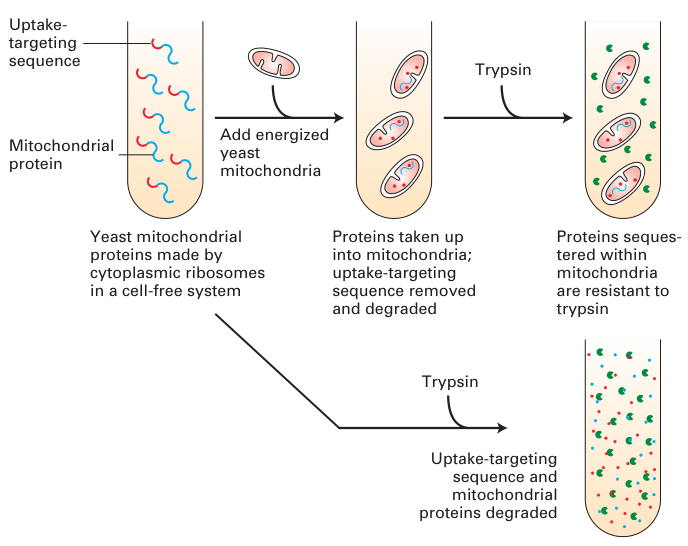
| Mitochondrial protein | 线粒体蛋白 |
| Uptake-targeting sequence | 摄取靶向序列 |
| Cytoplasmic ribosomes | 胞质核糖体 |
| Trypsin | 胰蛋白酶 |
| Add energized yeast mitochondria | 加入有能量的酵母线粒体 |
这里我们详细讨论蛋白质转运进入基质的每一步，然后考察某些蛋白质随后如何被靶向到线粒体的其他区室。
线粒体蛋白的可溶性前体（包括疏水性的整合膜蛋白）在胞质溶胶中合成后，能够直接与线粒体膜相互作用。未折叠的线粒体前体蛋白的输入，由线粒体靶向序列与线粒体外膜上的输入受体结合而启动。这些输入受体最初是通过以下实验鉴定出来的：针对线粒体外膜特定蛋白质的抗体被证明能抑制蛋白质输入离体的线粒体。随后的遗传学实验通过突变线粒体外膜特定蛋白质的基因表明，特定的受体蛋白负责不同类别线粒体蛋白的输入。例如，N端基质靶向序列由Tom20和Tom22识别。（线粒体膜上参与靶向和输入的蛋白质被命名为Tom蛋白，即外膜转位酶。）
许多蛋白质只能以未折叠状态被输入线粒体。诸如胞质溶胶Hsp70和Hsp90之类的分子伴侣蛋白利用ATP水解产生的能量，使新生蛋白和新合成的蛋白质保持在去聚集状态，从而可被线粒体摄取。对某些线粒体前体蛋白而言，线粒体外膜蛋白Tom70同时结合Hsp90和未折叠前体蛋白的部分区段，充当输入受体。
输入受体随后把前体蛋白转移到外膜中的输入通道。
这一通道主要由Tom40蛋白组成，被称为通用输入孔，因为所有已知的线粒体前体蛋白都经由它进入线粒体的内部区室。当Tom40被纯化并掺入脂质体时，它形成一个跨膜通道，其孔道宽到足以容纳一条未折叠的多肽链。通用输入孔穿过线粒体外膜，形成的基本上是一个被动通道；单向运输的驱动力来自线粒体内部，我们很快就会看到这一点。对于目的地为线粒体基质的前体而言，穿过外膜的转移与穿过由Tim23和Tim17蛋白组成的内膜通道的转移同时发生。（Tim代表内膜转位酶。）因此，向基质的转位发生在"接触位点"，在那里外膜和内膜紧邻。
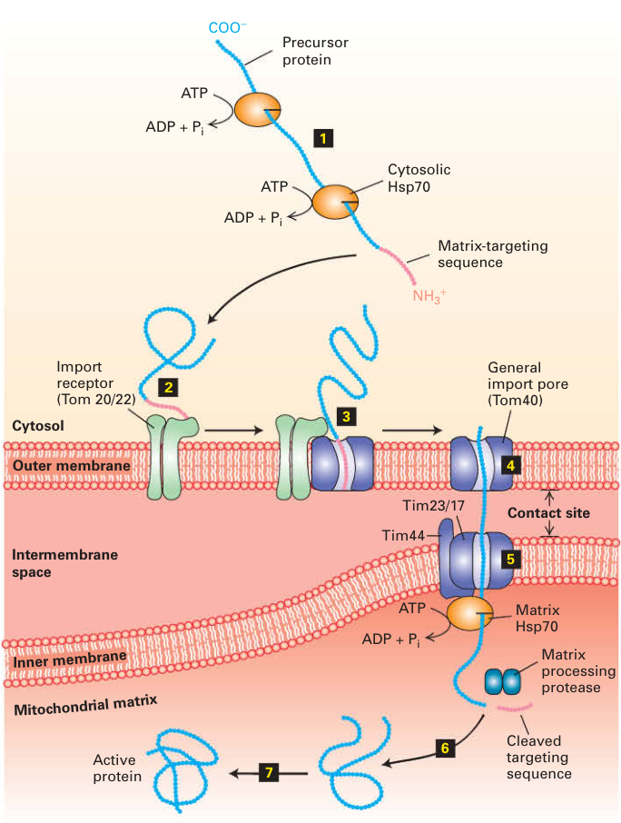
| Cytosol | 胞质溶胶 |
| Intermembrane space | 膜间隙 |
| Mitochondrial matrix | 线粒体基质 |
| Outer membrane | 外膜 |
| Inner membrane | 内膜 |
| Precursor protein | 前体蛋白 |
| Cytosolic Hsp70 | 胞质溶胶Hsp70 |
| Matrix Hsp70 | 基质Hsp70 |
| Matrix-targeting sequence | 基质靶向序列 |
| Import receptor (Tom20/22) | 输入受体（Tom20/22） |
| General import pore (Tom40) | 通用输入孔（Tom40） |
| Matrix processing peptidase | 基质加工肽酶 |
| Contact site | 接触位点 |
| Cleaved targeting sequence | 被切除的靶向序列 |
| Active protein | 活性蛋白 |
| Tim23/17 | Tim23/17 |
| Tim44 | Tim44 |
| ATP | ATP |
| ADP | ADP |
| Pi | Pi |
蛋白质的N端基质靶向序列进入线粒体基质后不久，就被一种驻留在基质中的蛋白酶切除。新出现的蛋白质还会被基质Hsp70结合，这种分子伴侣通过与跨膜蛋白Tim44相互作用而被定位到线粒体内膜中的转位通道上。这种结合刺激基质Hsp70水解ATP，人们认为Tim44和Hsp70共同为蛋白质向基质的转位提供动力。
有些被输入的蛋白质无需进一步协助就能折叠成最终的活性构象。然而，许多基质蛋白的最终折叠需要伴侣蛋白。如第3章所讨论的，伴侣蛋白通过一个依赖ATP的过程主动促进蛋白质折叠。在酵母中，线粒体基质里的一种伴侣蛋白Hsc60发生缺陷的突变体，能够正常输入基质蛋白并切除其靶向序列，但被输入的多肽无法折叠并组装成其天然的三级和四级结构。
嵌合蛋白研究揭示了线粒体蛋白质输入的重要特征
线粒体基质靶向序列能够指导蛋白质输入，这一结论的有力证据来自用重组DNA技术产生的嵌合蛋白。例如，可以把乙醇脱氢酶的基质靶向序列融合到二氢叶酸还原酶（DHFR）的N端，后者通常存在于胞质溶胶中。离体转位分析显示，在分子伴侣存在时（这些分子伴侣阻止C端的DHFR区段在胞质溶胶中折叠），该嵌合蛋白被转运进基质（图13-25a）。抑制剂甲氨蝶呤能紧密结合DHFR的活性位点并极大地稳定其折叠构象，它使该嵌合蛋白抵抗胞质溶胶分子伴侣的解析叠作用。当转位分析在甲氨蝶呤存在下进行时，该嵌合蛋白不能完全进入基质。这一发现表明，前体必须处于未折叠状态才能穿过两层线粒体膜中的输入孔。
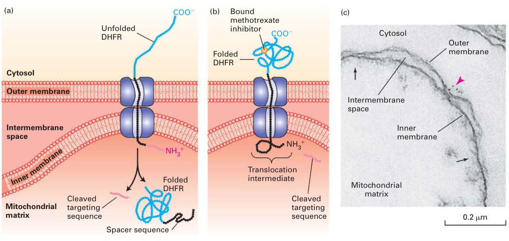
| Mitochondrial matrix | 线粒体基质 |
| Outer membrane | 外膜 |
| Inner membrane | 内膜 |
| Cytosol | 胞质溶胶 |
| Intermembrane space | 膜间隙 |
| Cleaved targeting sequence | 被切除的靶向序列 |
| Translocation intermediate | 转位中间体 |
| Folded DHFR | 折叠的DHFR |
| Unfolded DHFR | 未折叠的DHFR |
| Spacer sequence | 间隔序列 |
| Methotrexate | 甲氨蝶呤 |
| Bound methotrexate inhibitor | 结合的甲氨蝶呤抑制剂 |
进一步的研究揭示，如果有足够长的间隔序列把嵌合蛋白的N端基质靶向序列与DHFR部分隔开，那么在甲氨蝶呤存在下，只要有多肽足够长的部分伸入基质（可能是通过与基质Hsp70稳定结合）从而阻止多肽链滑回胞质溶胶，就能捕获到一种跨越两层膜的转位中间体（图13-25b）。要形成这样一种稳定的转位中间体，间隔序列必须长到足以跨越两层膜；一个50个氨基酸的间隔序列伸展到其最大可能长度就足以做到这一点。如果嵌合体含有一个较短的间隔序列——比如说，35个氨基酸——则得不到稳定的转位中间体，因为该间隔序列无法跨越两层膜。这些观察进一步证明，被转位的蛋白质能够同时跨越线粒体内膜和外膜，并且只能以未折叠状态穿过这些膜。
对稳定转位中间体的显微研究表明，它们聚集在线粒体内膜与外膜彼此靠近的部位（图13-25c）。由于在一个典型的酵母线粒体中，这些接触位点上可以观察到大约一千个被卡住的嵌合蛋白，因此人们认为，线粒体大约有一千个用于摄取线粒体蛋白的通用输入孔。
把蛋白质输入线粒体需要三种能量输入
如前所述并在图13-24中标明，线粒体蛋白的输入需要胞质溶胶和线粒体基质中Hsp70分子伴侣蛋白水解ATP。胞质溶胶Hsp70消耗能量使结合的前体蛋白保持未折叠状态，以便它们能被转位进基质。ATP对这一功能的重要性在以下研究中得到证明：把一种线粒体前体蛋白纯化，然后用尿素使其变性（解析叠）。在离体线粒体转位系统中检测时，变性蛋白在无ATP的情况下被掺入基质。相反，同样的前体蛋白处于天然未变性状态时，在无ATP的情况下不能被输入，即使有胞质溶胶分子伴侣存在也是如此。
多个基质Hsp70分子对一个正在转位的蛋白质依次结合并由ATP驱动释放，可能只是把未折叠的蛋白质捕获在基质中。另一种可能是，由Tim44蛋白锚定在膜上的基质Hsp70可能充当分子马达，把蛋白质拉入基质（见图13-24）。在这种情况下，基质Hsp70和Tim44的功能将分别类似于分子伴侣BiP和Sec63复合体在翻译后转位进入内质网腔过程中的功能（见图13-9）。
线粒体蛋白质输入所需的第三种能量输入，是跨内膜的H+电化学梯度，即质子动力势。回忆第12章的内容：在电子传递过程中，质子从基质被泵入膜间隙，从而在内膜两侧产生电势。一般来说，只有正在积极进行呼吸、因而在内膜两侧产生了质子动力势的线粒体，才能把前体蛋白从胞质溶胶转位进线粒体基质。用氧化磷酸化的抑制剂或解偶联剂（如氰化物或二硝基苯酚）处理线粒体，会耗散这种质子动力势。虽然前体蛋白仍能紧密地结合到这种中毒线粒体上的受体，但蛋白质无法被输入，无论是在完整细胞中还是在离体系统中，即使在ATP和分子伴侣蛋白存在时也是如此。科学家们并不完全理解质子动力势如何被用来促进前体蛋白进入基质。蛋白质一旦部分插入内膜，就会受到200 mV的膜电位作用（基质侧为负）。这一看似很小的电位是跨脂质双层极窄的疏水核心建立的，由此产生巨大的电化学梯度，相当于约400,000 V/cm。一种假说是，两亲性基质靶向序列中的正电荷只是被内侧为负的膜电位"电泳"或拉入基质。
多种信号和途径把蛋白质靶向到线粒体亚区室
与向基质的靶向不同，把蛋白质靶向到线粒体的膜间隙、内膜或外膜，通常需要不止一个靶向序列，并通过若干途径之一发生。图13-26总结了被分选到线粒体不同位置的蛋白质中靶向序列的组织方式。
内膜蛋白 已知有三条不同的途径把蛋白质靶向到线粒体内膜。一条途径利用与基质蛋白靶向相同的机器（图13-27，途径A）。一种称为CoxVa的细胞色素氧化酶亚基就是经由这条途径转运的蛋白质之一。CoxVa的前体形式含有一个由Tom20/22输入受体识别的N端基质靶向序列，它经由外膜的Tom40通用输入孔和内膜的Tim23/17转位复合体被转运。除在输入过程中被切除的基质靶向序列之外，CoxVa还含有一个疏水性的停止转移锚定序列。当蛋白质穿过Tim23/17通道时，停止转移锚定序列阻断C端跨内膜的转位。随后，这个锚定在膜上的中间体被侧向转移进内膜的双层中，就像I型整合膜蛋白被掺入ER膜那样（见图13-11）。
第二条通往内膜的途径为那些前体同时含有基质靶向序列和被一种称为Oxa1的内膜蛋白识别的内部疏水结构域的蛋白质（例如ATP合酶亚基9）所采用。这条途径被认为涉及至少把前体的一部分经由Tom40和Tim23/17通道转位进基质。在基质靶向序列被切除后，蛋白质通过一个需要与Oxa1以及可能还有其他内膜蛋白相互作用的过程插入内膜（图13-27，途径B）。Oxa1与一种参与把某些质膜蛋白插入细菌膜的蛋白质相关。这种相关性提示，Oxa1可能源自最终成为线粒体的内共生细菌中的转位机器。然而，构成线粒体内膜通道的蛋白质与细菌易位子中的蛋白质并无亲缘关系。Oxa1还参与某些蛋白质（例如细胞色素氧化酶亚基II）在内膜中的插入，这些蛋白质由线粒体DNA编码并在基质中由线粒体核糖体合成。
插入线粒体内膜的最后一条途径为含有六个跨膜结构域的多次跨膜蛋白（如ATP/ADP反向转运蛋白）所采用。这些蛋白质缺少通常的N端基质靶向序列，而是含有多个内部的线粒体靶向序列。在这些内部序列被由外膜蛋白Tom70和Tom22组成的第二个输入受体识别后，被输入的蛋白质经由通用输入孔穿过外膜（图13-27，途径C）。随后该蛋白质被转移到内膜中由Tim22、Tim18和Tim54蛋白组成的第二个转位复合体。向Tim22/18/54复合体的转移依赖于一个由两种小蛋白Tim9和Tim10组成的多聚复合体，它们驻留在膜间隙。这些小的Tim蛋白被认为充当分子伴侣，把被输入的前体蛋白从通用输入孔引导到Tim22/18/54复合体，并在内膜中通过结合它们的疏水区，防止它们在膜间隙的水相环境中形成不溶性聚集体。最终，Tim22/18/54复合体负责把被输入蛋白的多个疏水区段掺入内膜。
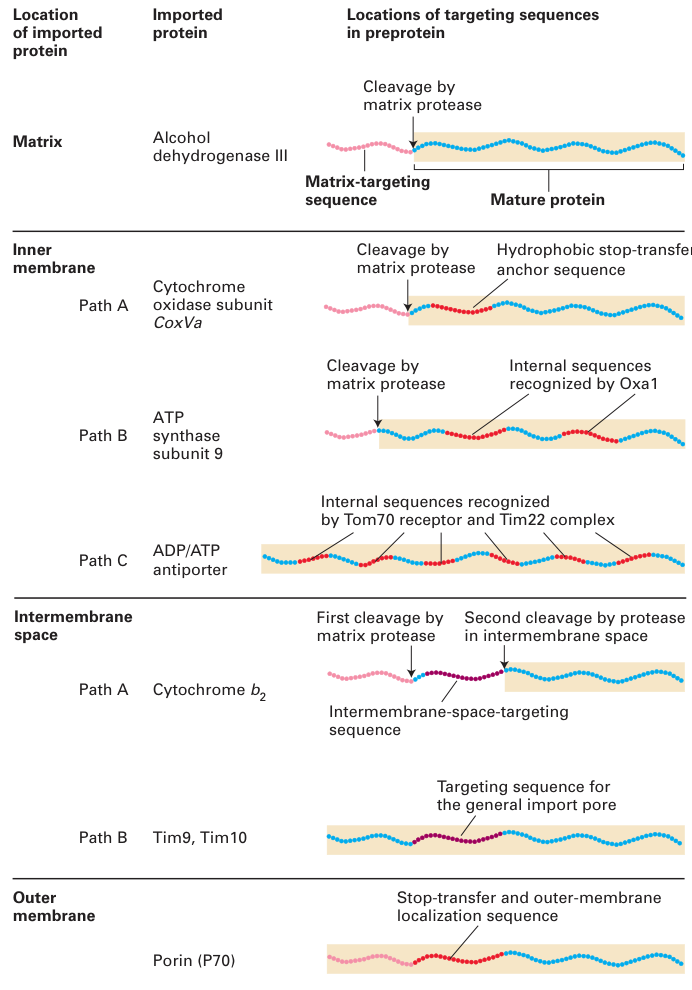
| Mature protein | 成熟蛋白 |
| Imported protein | 被输入的蛋白 |
| Locations of targeting sequences in preprotein | 前体蛋白中靶向序列的位置 |
| Cleavage by matrix protease | 被基质蛋白酶切割 |
| Matrix-targeting sequence | 基质靶向序列 |
| Alcohol dehydrogenase III | 乙醇脱氢酶III |
| Cytochrome oxidase subunit CoxVa | 细胞色素氧化酶亚基CoxVa |
| Cytochrome b2 | 细胞色素b2 |
| Porin (P70) | 孔蛋白（P70） |
| ATP synthase subunit 9 | ATP合酶亚基9 |
| ADP/ATP antiporter | ADP/ATP反向转运蛋白 |
| Tim9, Tim10 | Tim9、Tim10 |
| General import pore targeting sequence | 通用输入孔靶向序列 |
| Internal sequences recognized by Tom70/Tim22 | 被Tom70/Tim22识别的内部序列 |
| Stop-transfer and outer-membrane localization sequence | 停止转移及外膜定位序列 |
| Hydrophobic stop-transfer anchor sequence | 疏水性停止转移锚定序列 |
| First cleavage by matrix protease | 由基质蛋白酶进行的第一次切割 |
| Second cleavage in intermembrane space | 膜间隙中的第二次切割 |
| Intermembrane-space-targeting sequence | 膜间隙靶向序列 |
| Internal sequences recognized by Oxa1 | 被Oxa1识别的内部序列 |
| Matrix | 基质 |
| Inner membrane | 内膜 |
| Outer membrane | 外膜 |
| Intermembrane space | 膜间隙 |
| Path A | 途径A |
| Path B | 途径B |
| Path C | 途径C |
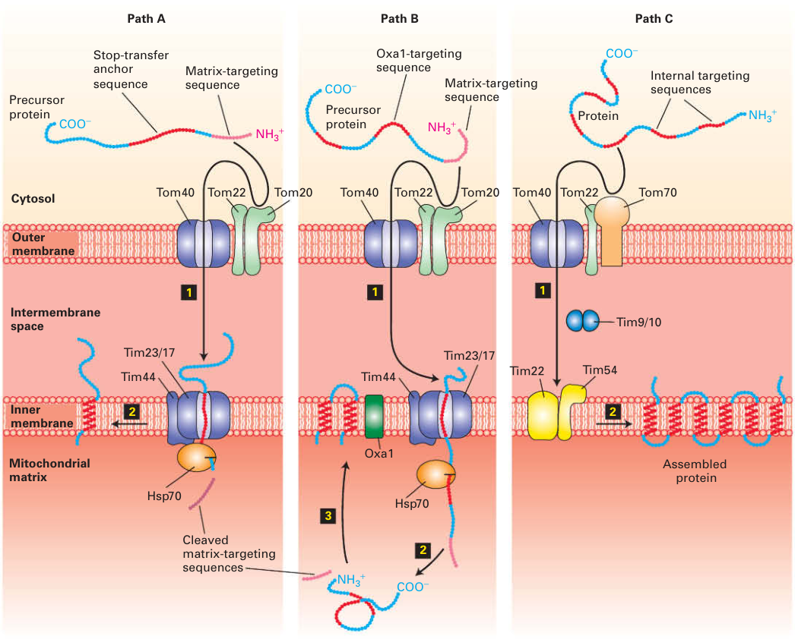
| Tom40 | Tom40 |
| Tom20 | Tom20 |
| Tom22 | Tom22 |
| Tom70 | Tom70 |
| Tim23/17 | Tim23/17 |
| Tim22 | Tim22 |
| Tim54 | Tim54 |
| Tim44 | Tim44 |
| Tim9/10 | Tim9/10 |
| Oxa1 | Oxa1 |
| Hsp70 | Hsp70 |
| Precursor protein | 前体蛋白 |
| Assembled protein | 组装好的蛋白 |
| Cleaved matrix-targeting sequence | 被切除的基质靶向序列 |
| Stop-transfer anchor sequence | 停止转移锚定序列 |
| Oxa1-targeting sequence | Oxa1靶向序列 |
| Internal targeting sequences | 内部靶向序列 |
| Cytosol | 胞质溶胶 |
| Intermembrane space | 膜间隙 |
| Mitochondrial matrix | 线粒体基质 |
| Inner membrane | 内膜 |
| Outer membrane | 外膜 |
| Path A | 途径A |
| Path B | 途径B |
| Path C | 途径C |
膜间隙蛋白 有两条途径把胞质溶胶蛋白运送到线粒体内膜与外膜之间的空间。主要途径为细胞色素b2这类蛋白质所采用，它们的前体携带两个不同的N端靶向序列，二者最终都会被切除。两个序列中最靠近N端的是基质靶向序列，由基质蛋白酶切除。第二个靶向序列是一个疏水区段，它阻断蛋白质完全跨内膜的转位（图13-28，途径A）。在由此产生的、嵌入膜的中间体侧向扩散离开Tim23/17转位通道之后，膜中的一种蛋白酶在靠近疏水跨膜区段处切割该蛋白，把成熟蛋白以可溶形式释放到膜间隙。除第二次蛋白水解切割之外，这条途径与CoxVa等内膜蛋白的途径相似（见图13-27，途径A）。
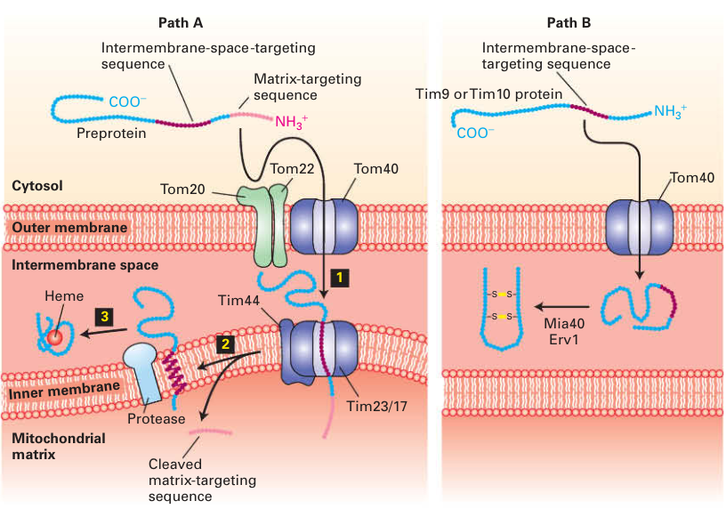
| Protease | 蛋白酶 |
| Preprotein | 前体蛋白 |
| Tom20 | Tom20 |
| Tom22 | Tom22 |
| Tom40 | Tom40 |
| Tim23/17 | Tim23/17 |
| Tim44 | Tim44 |
| Tim9 or Tim10 protein | Tim9或Tim10蛋白 |
| Mia40 | Mia40 |
| Erv1 | Erv1 |
| Heme | 血红素 |
| Matrix-targeting sequence | 基质靶向序列 |
| Intermembrane-space-targeting sequence | 膜间隙靶向序列 |
| Cleaved matrix-targeting sequence | 被切除的基质靶向序列 |
| Cytosol | 胞质溶胶 |
| Intermembrane space | 膜间隙 |
| Mitochondrial matrix | 线粒体基质 |
| Outer membrane | 外膜 |
| Inner membrane | 内膜 |
| Path A | 途径A |
| Path B | 途径B |
驻留在膜间隙的小蛋白Tim9和Tim10，说明了靶向到膜间隙的第二条途径。经这条途径输入的蛋白质不含N端基质靶向序列，而是经由通用输入孔直接被送到膜间隙，不涉及任何内膜转位因子（图13-28，途径B）。穿过Tom40通用输入孔的转位似乎并不与任何产能过程相偶联；然而，一旦进入膜间隙，Tim9和Tim10蛋白各获得两个二硫键，并折叠成紧凑、稳定的结构。显然，驱动它们单向穿过外膜的机制包括被动扩散穿过外膜，随后发生折叠和二硫键形成，从而不可逆地把这些蛋白质捕获在膜间隙中。在许多方面，膜间隙中二硫键形成的过程与内质网腔中的过程相似，并涉及一种生成二硫键的蛋白Erv1和一种二硫键转移蛋白Mia40。
外膜蛋白 驻留在线粒体外膜中的许多蛋白质，包括Tom40孔本身和线粒体孔蛋白，都具有β桶结构，其中反平行β链形成环绕中央通道的疏水跨膜区段。这类蛋白质先与通用输入孔Tom40相互作用而被掺入外膜；随后它们被转移到SAM（分选与组装机器）复合体，该复合体由至少三种外膜蛋白组成。这三种蛋白之一Sam50与细菌蛋白BamA密切相关，后者是把β桶蛋白插入革兰氏阴性菌外膜所必需的。这种相关性提供了细菌与线粒体之间膜蛋白插入机制保守的又一个例子。据推测，正是β桶蛋白非常稳定的疏水性最终使它们被稳定地掺入外膜，但SAM复合体究竟如何促进这一过程尚不清楚。
叶绿体基质蛋白的输入与线粒体基质蛋白的输入相似
叶绿体基质中所含的蛋白质包括卡尔文循环的酶，它们的功能是在光合作用中固定二氧化碳（见第12章）。核酮糖-1,5-二磷酸羧化酶（rubisco）的大（L）亚基由叶绿体DNA编码，并在基质空间中的叶绿体核糖体上合成。rubisco的小（S）亚基以及所有其他卡尔文循环的酶由核基因编码，在胞质溶胶中合成后被运送到叶绿体。这些基质蛋白的前体形式含有一个N端基质输入序列（见表13-1）。
与图13-23所示用线粒体进行的实验类似，用离体叶绿体进行的实验表明，它们能在rubisco S亚基前体合成后将其输入。未折叠的前体进入基质空间后，瞬时结合到一种基质Hsp70分子伴侣上，N端基质输入序列被切除。在驻留在基质空间中的Hsp60伴侣蛋白促进的反应中，八个S亚基与八个L亚基结合，生成有活性的rubisco酶。
基质输入的一般过程似乎与蛋白质输入线粒体基质的过程非常相似（见图13-24）。已知至少三种叶绿体外膜蛋白（包括一个结合基质输入序列的受体和一种转位通道蛋白）以及五种叶绿体内膜蛋白，是把蛋白质导向基质所必需的。虽然这些蛋白质在功能上类似于线粒体膜中的受体和通道蛋白，但它们在结构上并不同源。这些叶绿体蛋白与线粒体蛋白之间缺乏序列相似性，提示它们可能是在进化过程中独立产生的。
现有证据提示，叶绿体基质蛋白与线粒体基质蛋白一样，是以未折叠状态被输入的。向基质的输入依赖于一种基质Hsp70分子伴侣催化的ATP水解，其功能类似于线粒体基质中的Hsp70和内质网腔中的BiP。与线粒体不同，叶绿体不在其内膜两侧产生电化学梯度（质子动力势）。因此，蛋白质向叶绿体基质的输入似乎仅由ATP水解提供动力。
蛋白质通过与细菌蛋白质转位相关的机制被靶向到类囊体
除包围它们的双层膜之外，叶绿体还含有一系列内部相互连通的膜性囊，即类囊体（见图12-37）。光合作用的所有化学反应都发生在类囊体膜或类囊体腔中，并由定位到这个特化亚区室的蛋白质催化。这些蛋白质中有许多是在胞质溶胶中作为前体合成的，这些前体含有多个靶向序列。例如，质体蓝素和其他目的地为类囊体腔的蛋白质需要两个靶向序列的依次作用。第一个是N端基质输入序列，它通过与输入rubisco S亚基相同的途径把蛋白质导向基质。第二个序列把蛋白质从基质靶向到类囊体腔。这些靶向序列的作用已在测量重组DNA技术产生的突变蛋白被离体叶绿体摄取的实验中得到证明。例如，缺少类囊体靶向序列但含有完整基质输入序列的突变质体蓝素，会在基质中积累，而不被转运进类囊体腔。
已鉴定出四条把蛋白质从基质转运进类囊体的不同途径。所有四条途径都被发现与细菌中相应的转运机制密切相关，这说明了基质膜与细菌质膜之间密切的进化关系。质体蓝素及相关蛋白从基质转运进类囊体腔，是通过一条依赖SRP的途径进行的，该途径使用一个类似于SecY的易位子，即Sec61复合体的细菌版本（图13-29，左）。第二条把蛋白质转运进类囊体腔的途径涉及一种与细菌蛋白SecA相关的蛋白质，它利用ATP水解的能量驱动蛋白质穿过SecY易位子。第三条途径把蛋白质靶向到类囊体膜，依赖于一种与线粒体Oxa1蛋白及同源的细菌蛋白相关的蛋白质（见图13-27，途径B）。某些由叶绿体DNA编码并在基质中合成、或从胞质溶胶转运进基质的蛋白质，经由这条途径被插入类囊体膜。
最后，结合含金属辅因子的类囊体蛋白经由另一条途径进入类囊体腔（图13-29，右）。这些蛋白质的未折叠前体首先被靶向到基质，在那里N端基质输入序列被切除，随后蛋白质折叠并结合其辅因子。一组类囊体膜蛋白协助把折叠的蛋白质和结合的辅因子转位进类囊体腔。这一过程由通常维持在类囊体膜两侧的H+电化学梯度提供动力。把蛋白质导向这条途径的类囊体靶向序列包含两个相距很近的精氨酸残基，它们对识别至关重要。细菌细胞也有一种机制，能把带有类似含精氨酸序列的折叠蛋白质转运穿过质膜，称为Tat（双精氨酸转位）途径。这些大型折叠球状蛋白究竟是如何被转位穿过类囊体膜的分子机制尚未完全清楚，但一个带有合适双精氨酸信号的折叠蛋白的存在，似乎能诱导膜中Tat蛋白寡聚化，形成孔样结构。在这方面，Tat途径类似于下一节将要描述的、把折叠蛋白输入过氧化物酶体的途径。
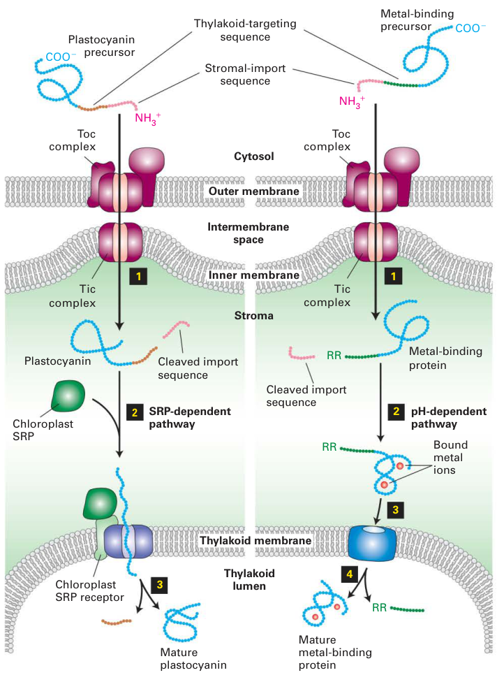
| Plastocyanin | 质体蓝素 |
| Plastocyanin precursor | 质体蓝素前体 |
| Metal-binding protein | 金属结合蛋白 |
| Metal-binding precursor | 金属结合蛋白前体 |
| Mature plastocyanin | 成熟质体蓝素 |
| Mature metal-binding protein | 成熟金属结合蛋白 |
| Bound metal ions | 结合的金属离子 |
| Chloroplast SRP | 叶绿体SRP |
| Chloroplast SRP receptor | 叶绿体SRP受体 |
| SRP-dependent pathway | 依赖SRP的途径 |
| pH-dependent pathway | 依赖pH的途径 |
| Stromal-import sequence | 基质输入序列 |
| Thylakoid-targeting sequence | 类囊体靶向序列 |
| Cleaved import sequence | 被切除的输入序列 |
| Toc complex | TOC复合体 |
| Tic complex | TIC复合体 |
| Cytosol | 胞质溶胶 |
| Intermembrane space | 膜间隙 |
| Stroma | 基质 |
| Thylakoid lumen | 类囊体腔 |
| Thylakoid membrane | 类囊体膜 |
| Outer membrane | 外膜 |
| Inner membrane | 内膜 |
- 大多数线粒体和叶绿体蛋白由核基因编码，在胞质溶胶核糖体上合成，并以翻译后方式被输入细胞器。
- 把前体蛋白从胞质溶胶靶向到线粒体基质或叶绿体基质所需的全部信息，都包含在其N端靶向序列之中。蛋白质输入之后，靶向序列被基质中的蛋白酶切除。
- 胞质溶胶分子伴侣使线粒体和叶绿体蛋白的前体保持未折叠状态。只有未折叠的蛋白质才能被输入这些细胞器。线粒体中的转位发生在细胞器外膜与内膜彼此靠近的部位。
- 目的地为线粒体基质的蛋白质结合到线粒体外膜上的受体，随后被转移到外膜中的通用输入孔（Tom40）。穿过外膜与穿过内膜的转位同时发生。转位由基质中Hsp70水解ATP（见图13-24）以及跨内膜的质子动力势驱动。
- 被分选到线粒体除基质以外其他目的地的蛋白质，通常含有两个或更多靶向序列，其中之一可能是N端基质靶向序列（见图13-26）。
- 某些目的地为膜间隙或内膜的线粒体蛋白先被输入基质，然后被重新导向；另一些则从不进入基质，而是直接前往其最终位置。
- 蛋白质输入叶绿体基质经由外膜和内膜转位通道进行，这些通道在功能上类似于线粒体通道，但由与相应线粒体蛋白在序列上无关的蛋白质组成。
- 目的地为类囊体的蛋白质具有次级靶向序列。这些蛋白质进入基质后，基质靶向序列被切除，从而暴露出类囊体靶向序列。
- 已知的四条把蛋白质从叶绿体基质运往类囊体的途径，与穿过细菌质膜的转位非常相似（见图13-29）。其中一个系统能够转位折叠的蛋白质。
13.5 过氧化物酶体蛋白的靶向
过氧化物酶体是由单层膜包被的小细胞器。与线粒体和叶绿体不同，过氧化物酶体不含DNA和核糖体。因此，所有过氧化物酶体腔内蛋白都由核基因编码，在胞质溶胶的游离核糖体上合成，然后被掺入已存在的或新生成的过氧化物酶体中。过氧化物酶体通过添加蛋白（和脂质）而增大，最终发生分裂，形成新的过氧化物酶体，这与线粒体和叶绿体的情况相同。
不同类型细胞中过氧化物酶体的大小和酶含量差别很大。不过，所有过氧化物酶体都含有利用分子氧氧化各种底物（如氨基酸和脂肪酸）的酶，把它们分解成更小的组分，以供生物合成途径使用。这些氧化反应产生的过氧化氢（H2O2）反应性极强，对细胞组分有潜在危害；不过，过氧化物酶体中含有过氧化氢酶等其他酶，能高效地把H2O2转化为H2O。在哺乳动物中，过氧化物酶体在肝细胞中最为丰富，约占细胞体积的1–2%。
一种胞质溶胶受体把带有C端SKL序列的蛋白靶向到过氧化物酶体基质
过氧化物酶体靶向序列最初是通过检测带缺失的过氧化物酶体蛋白是否存在过氧化物酶体靶向的特异性缺陷而鉴定出来的。在一项早期研究中，萤火虫萤光素酶的基因在培养的昆虫细胞中表达，所得蛋白被证明能正确地靶向到过氧化物酶体。然而，表达一个缺失了编码该蛋白C端序列的一小部分的基因，所产生的萤光素酶不能靶向到过氧化物酶体，而是滞留在细胞质中。通过在该系统中检测各种突变的萤光素酶蛋白，研究者发现，C端的Ser-Lys-Leu序列（单字母代码为SKL）或与之相关的序列是过氧化物酶体靶向所必需的。此外，把一个SKL序列加到通常位于胞质溶胶的蛋白的C端，会使培养细胞中的过氧化物酶体摄取这种被改造的蛋白。众多不同的过氧化物酶体蛋白中，除少数几种外，都带有这类序列，称为过氧化物酶体靶向序列1，或简称PTS1。
过氧化氢酶和其他带PTS1的蛋白输入过氧化物酶体基质的途径如图13-30所示。在胞质溶胶中，PTS1与一种称为Pex5的受体结合。Pex5具有一个显著特性：它能够从可溶的单体形式，转变为与膜蛋白Pex14形成复合体、嵌入过氧化物酶体膜中的寡聚形式。以一种尚不十分清楚的方式，带PTS1的蛋白从Pex5的寡聚形式中释放出来，进入过氧化物酶体内部。与介导蛋白输入ER、线粒体和叶绿体的大多数系统不同，这套过氧化物酶体输入机器能够把折叠的蛋白转位跨膜。例如，过氧化氢酶在穿过过氧化物酶体膜之前，就在细胞质中折叠成一定构象并结合血红素。无细胞研究显示，过氧化物酶体输入机器可以运输大的高分子物体，包括直径约9 nm的金颗粒，只要它们连有PTS1标签。
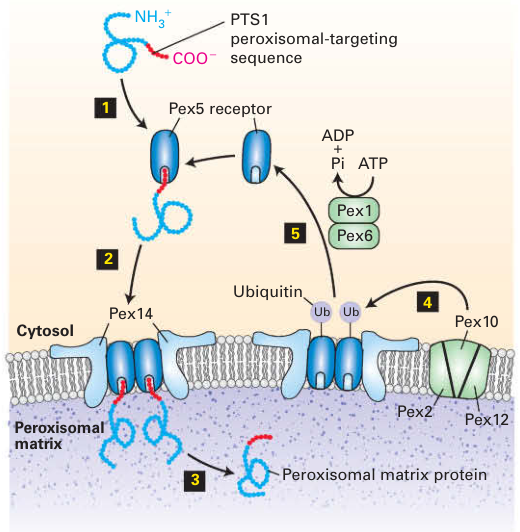
| PTS1 | 过氧化物酶体靶向信号1（PTS1） |
| Peroxisomal targeting sequence | 过氧化物酶体靶向序列 |
| Peroxisomal matrix protein | 过氧化物酶体基质蛋白 |
| Peroxisomal matrix | 过氧化物酶体基质 |
| Pex5 receptor | Pex5受体 |
| Pex14 | Pex14 |
| Pex12 | Pex12 |
| Pex10 | Pex10 |
| Pex2 | Pex2 |
| Pex1 | Pex1 |
| Pex6 | Pex6 |
| Cytosol | 胞质溶胶 |
| Ubiquitin | 泛素 |
| Ub | 泛素（Ub） |
| ATP | ATP |
| ADP | ADP |
| Pi | Pi |
有证据表明，与带PTS1的货物分子结合的Pex5寡聚体以及Pex14的大小，会根据带PTS1货物分子的大小进行调整。寡聚体的动态形成显然是这样一种关键机制：它使带PTS1的货物分子能够被容纳进来，而无需形成会破坏过氧化物酶体膜完整性的大的稳定孔道。
一旦带PTS1的货物分子被释放到过氧化物酶体内部，Pex5与Pex14的寡聚复合体就被主动解离，从而把Pex5以可溶状态释放回细胞质。Pex5的循环利用涉及膜结合Pex5被泛素化修饰。过氧化物酶体膜蛋白Pex10、Pex12和Pex2组成的复合体把一个泛素基团转移到Pex5上。由Pex15锚定在过氧化物酶体膜上的AAA-ATP酶Pex1和Pex6识别泛素化的Pex5，并利用来自ATP的水解能量把它从与Pex14的寡聚复合体中移出，释放到胞质溶胶中。去除泛素修饰后，胞质溶胶中的Pex5就可以进行下一轮与带PTS1蛋白的结合。
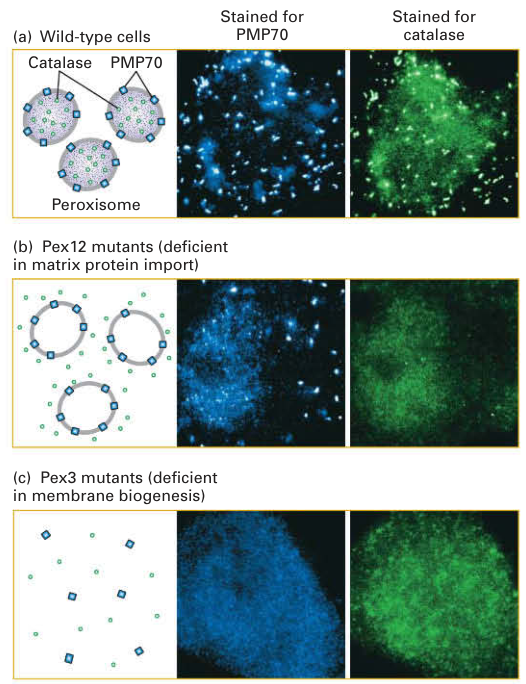
| Wild-type cells | 野生型细胞 |
| Pex12 mutants (deficient in matrix protein import) | Pex12突变体（基质蛋白输入缺陷） |
| Pex3 mutants (deficient in membrane biogenesis) | Pex3突变体（膜发生缺陷） |
| Peroxisome | 过氧化物酶体 |
| PMP70 | 过氧化物酶体膜蛋白70（PMP70） |
| Catalase | 过氧化氢酶 |
用纯化组分进行的过氧化物酶体输入研究显示，Pex5与带PTS1蛋白的结合、Pex5与Pex14寡聚复合体的组装，以及带PTS1蛋白向过氧化物酶体内部的释放，都能在没有ATP这类化学能源的情况下自发发生。相比之下，Pex5的泛素修饰和Pex5由AAA-ATP酶介导的循环利用，都由ATP水解提供动力。显然，输入过程中的循环利用步骤消耗能量，以驱动货物分子单向跨过过氧化物酶体膜转位。
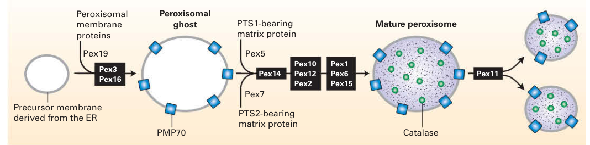
| Pex3 | Pex3 |
| Pex16 | Pex16 |
| Pex19 | Pex19 |
| Pex5 | Pex5 |
| Pex7 | Pex7 |
| Pex14 | Pex14 |
| Pex15 | Pex15 |
| Pex10 | Pex10 |
| Pex12 | Pex12 |
| Pex2 | Pex2 |
| Pex1 | Pex1 |
| Pex6 | Pex6 |
| Pex11 | Pex11 |
| Peroxisomal membrane proteins | 过氧化物酶体膜蛋白 |
| Peroxisomal ghost | 过氧化物酶体幽灵 |
| PTS1-bearing matrix protein | 带PTS1的基质蛋白 |
| PTS2-bearing matrix protein | 带PTS2的基质蛋白 |
| Mature peroxisome | 成熟过氧化物酶体 |
| Precursor membrane derived from the ER | 源自ER的前体膜 |
| PMP70 | 过氧化物酶体膜蛋白70（PMP70） |
| Catalase | 过氧化氢酶 |
少数过氧化物酶体基质蛋白，如硫解酶，是以带有称为PTS2的N端靶向序列的前体形式合成的。这些蛋白与另一种胞质溶胶受体蛋白结合，但除此之外，它们的输入被认为与含PTS1的蛋白按相同机制进行。
过氧化物酶体膜蛋白与基质蛋白通过不同途径被掺入
引起过氧化物酶体组装缺陷的常染色体隐性突变在人群中自然发生。这类突变可导致严重的发育缺陷，常伴有颅面畸形。例如，在泽尔韦格综合征及相关疾病中，许多或所有蛋白进入过氧化物酶体基质的运输都受到损害：新合成的过氧化物酶体酶滞留在胞质溶胶中，并最终被降解。对来自泽尔韦格综合征患者的培养细胞以及携带类似突变的酵母细胞进行的遗传学分析，已鉴定出20多个过氧化物酶体发生所必需的基因。■
对过氧化物酶体组装突变体的研究显示，输入过氧化物酶体基质蛋白和把蛋白插入过氧化物酶体膜使用的是不同途径（图13-31）。例如，对某些泽尔韦格综合征患者细胞的分析，鉴定出了编码Pex5的基因，以及Pex5循环利用所需的许多Pex基因。在这些蛋白中任何一个有缺陷的突变细胞都无法把基质蛋白掺入过氧化物酶体；尽管如此，这些细胞仍含有空的过氧化物酶体，它们具有正常的过氧化物酶体膜蛋白组分（图13-31b）。
研究发现，另外三个基因中任何一个发生突变，都会同时阻断过氧化物酶体膜蛋白的插入和基质蛋白的输入（图13-31c）。这些发现表明，有一组蛋白把可溶蛋白转位到过氧化物酶体基质中，而把蛋白插入过氧化物酶体膜则需要另一组不同的蛋白。这种情况与ER、线粒体和叶绿体明显不同——后者的膜蛋白和可溶蛋白在插入这些细胞器时共用许多相同的组分。
虽然大多数过氧化物酶体是由已有细胞器分裂产生的，但这些细胞器也可以通过图13-32所示的三阶段过程从头产生。在这种情况下，过氧化物酶体的组装始于ER。至少有两种过氧化物酶体膜蛋白，Pex3和Pex16，通过13.2节所述的机制插入ER膜。随后Pex3和Pex16招募Pex19，形成ER膜上一个特化的区域，该区域可以从ER上出芽，形成过氧化物酶体前体膜。过氧化物酶体膜蛋白组装到成熟过氧化物酶体中还需要Pex19，它似乎作为过氧化物酶体膜蛋白靶向序列的可溶性受体起作用；此外还需要Pex3和Pex16，它们作为Pex19的膜受体。一整套过氧化物酶体膜蛋白的插入，产生了具备基质蛋白输入所需全部组分的膜，从而导致成熟、有功能的过氧化物酶体的形成。
成熟过氧化物酶体的分裂在很大程度上决定了一个细胞内过氧化物酶体的数量，它依赖于又一个蛋白——Pex11。Pex11蛋白的过表达会导致过氧化物酶体数量大幅增加，提示该蛋白控制着过氧化物酶体分裂的程度。由分裂产生的小过氧化物酶体，可以通过前面所述的相同途径掺入额外的基质蛋白和膜蛋白而增大。
- 所有过氧化物酶体腔内蛋白都在胞质溶胶的游离核糖体上合成，并以翻译后方式掺入该细胞器。
- 大多数过氧化物酶体基质蛋白含有一个称为PTS1的C端靶向序列；少数具有N端PTS2靶向序列。这两种靶向序列在输入后都不被切除。
- 所有目的地为过氧化物酶体基质的蛋白都与一种胞质溶胶受体蛋白结合（带PTS1和带PTS2的蛋白所结合的受体不同），随后被导向过氧化物酶体膜上共同的转位机器（见图13-30）。
- 基质蛋白跨过氧化物酶体膜的转位依赖ATP水解。与输入到ER、线粒体或叶绿体的蛋白不同，许多过氧化物酶体基质蛋白在胞质溶胶中折叠，并以折叠的构象穿过膜。
- 目的地为过氧化物酶体膜的蛋白所含的靶向序列与过氧化物酶体基质蛋白不同，并通过不同的途径被输入。
- 与线粒体和叶绿体不同，过氧化物酶体既可以从源自ER的前体膜从头产生，也可以由已有细胞器分裂而来（见图13-32）。
13.6 进出细胞核的转运
细胞核由两层膜与细胞质隔开，这两层膜构成核被膜（见图1-12a）。核被膜与ER连续，并构成ER的一部分。蛋白质从细胞质进入细胞核的转运，以及包括mRNA、tRNA和核糖体亚基在内的大分子从细胞核向外的移动，都通过核孔进行，核孔贯穿核被膜的两层膜。蛋白质输入细胞核与蛋白质输入其他细胞器共有一些基本特征。例如，被输入的核蛋白携带特定的靶向序列，称为核定位信号（NLS）。然而，蛋白质是以折叠状态被输入细胞核的，因此核输入与蛋白质跨ER、线粒体和叶绿体膜的转位有本质区别，后者在转位时蛋白质是未折叠的。本节讨论蛋白质进出细胞核的主要机制。我们还将讨论mRNA和其他核糖核蛋白复合物被输出细胞核的过程，该过程在机制上与核蛋白输入不同。
大分子和小分子经核孔复合体进出细胞核
在所有真核细胞中，许多核孔贯穿核被膜。每个核孔都由一种精细的结构形成，该结构称为核孔复合体（NPC），是细胞中最大的蛋白质组装体之一。在脊椎动物中，孔结构的总质量为60,000–80,000 kDa，约为一个核糖体的16倍。一个NPC由约30种不同蛋白质的多个拷贝组成，这些蛋白质称为核孔蛋白。核孔复合体的电镜照片显示出一个包埋在膜中的环状结构，它围绕着一个以水相为主的孔（图13-33）。八条约100 nm长的纤丝伸入核质，这些纤丝的远端由终末环连接，形成一种称为核篮的结构。胞质丝从NPC的胞质侧伸入胞质溶胶。
离子、小代谢物以及分子量不超过约40 kDa的球状蛋白，可以被动扩散通过核孔复合体的中央水相区域。然而，大蛋白和核糖核蛋白复合物不能扩散进出细胞核。相反，这些大分子在可溶性转运蛋白的协助下被主动转运通过NPC，这些转运蛋白结合大分子，同时也与核孔蛋白相互作用。NPC进行这种主动转运的能力和效率十分惊人。据估计，每个NPC每分钟向细胞核内输入60,000个蛋白质分子，同时向细胞核外输出50–250个mRNA分子、10–20个核糖体亚基和1000个tRNA。
总的来说，核孔蛋白分为三类：结构性核孔蛋白、膜性核孔蛋白和FG核孔蛋白。结构性核孔蛋白构成核孔的骨架，是一个具有八重旋转对称性的环，横跨核被膜的两层膜，形成一个环带。核被膜的内膜和外膜在NPC处由一片高度弯曲的膜区域相连，该区域含有嵌入膜中的膜性核孔蛋白（图13-33b）。一组七种结构性核孔蛋白形成一个大小与核糖体相当的Y形结构，称为Y复合体。16个Y复合体拷贝构成孔的基本结构骨架，它在核被膜两侧具有双侧对称性，在核被膜平面内具有八重旋转对称性（图13-33c）。Y复合体内多次重复的一个结构基序与驱动细胞内包被囊泡形成的COPII蛋白中的一种结构密切相关（见第14章）。结构性核孔蛋白与囊泡包被蛋白之间的这种原始关系提示，这两类膜包被复合体具有共同的起源。该元件的基本功能可能是形成一种蛋白质晶格，它与膜性核孔蛋白形成复合物，使膜变形为高度弯曲的结构。
FG核孔蛋白衬于核孔复合体的通道内，也见于核篮和胞质丝上，它们含有多个短疏水序列的重复，这些序列富含苯丙氨酸（F）和甘氨酸（G）残基（FG重复序列）。
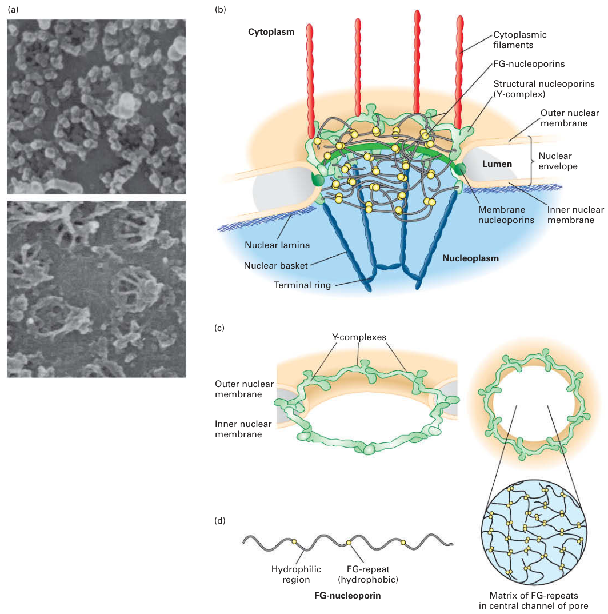
| Cytoplasm | 细胞质 |
| Nucleoplasm | 核质 |
| Cytoplasmic filaments | 胞质丝 |
| FG-nucleoporins | FG核孔蛋白 |
| Structural nucleoporins | 结构性核孔蛋白 |
| Membrane nucleoporins | 膜性核孔蛋白 |
| Y-complexes | Y复合体 |
| Outer nuclear membrane | 外核膜 |
| Inner nuclear membrane | 内核膜 |
| Nuclear envelope | 核被膜 |
| Nuclear basket | 核篮 |
| Terminal ring | 终末环 |
| Nuclear lamina | 核纤层 |
| FG-repeat | FG重复序列 |
| Matrix of FG-repeats | FG重复序列基质 |
| Central channel of pore | 孔中央通道 |
| Hydrophilic region | 亲水区域 |
疏水的FG重复序列被认为位于延伸的、除此之外为亲水的多肽链区域中，这些多肽链充满中央转运通道。FG核孔蛋白对NPC的功能是必需的；然而，即使多达一半的FG重复序列被删除，NPC仍保持功能。据认为，FG核孔蛋白形成一种柔性的凝胶状基质，其总体性质允许小分子扩散，同时排斥大于40 kDa的、无分子伴侣陪伴的亲水蛋白（图13-33d）。
核转运受体护送含核定位信号的蛋白质进入细胞核
细胞核中的所有蛋白质——例如组蛋白、转录因子以及DNA和RNA聚合酶——都在细胞质中合成，并通过核孔复合体输入细胞核。这类蛋白质含有核定位信号，指导它们选择性地转运进入细胞核。NLS最早是通过分析猿猴病毒40（SV40）编码的大T抗原基因的突变而被发现的。野生型大T抗原在病毒感染的细胞中定位于细胞核，而某些突变型大T抗原则在细胞质中积累（图13-34）。造成这种细胞定位改变的突变都发生在靠近该蛋白质C端的一段富含碱性氨基酸的特定七残基序列内：Pro-Lys-Lys-Lys-Arg-Lys-Val。用嵌合蛋白进行的实验表明，把这段序列与一种胞质蛋白融合后，它能指导转运进入细胞核，因而起NLS的作用。随后在众多其他被输入细胞核的蛋白质中也鉴定出了NLS序列。其中许多序列与SV40大T抗原中的碱性NLS相似，而另一些在化学性质上则相当不同。例如，RNA结合蛋白hnRNP A1中的NLS是疏水的。因此，识别这些极为不同的序列存在多种机制。
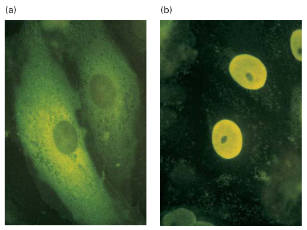
关于核输入机制的早期工作表明，含有与SV40大T抗原中相似的碱性NLS的蛋白质，只有在提供胞质溶胶提取物时才能被高效转运进分离的细胞核（图13-35）。利用这一测定体系，研究人员纯化出两种必需的胞质溶胶组分：Ran和一种核转运受体。Ran是一种小的单体G蛋白，它存在于结合GTP或结合GDP两种构象之一（见图3-34）。正是Ran在结合GTP与结合GDP两种构象之间的循环、并导致GTP净水解为GDP，最终提供了驱动大分子单向通过核孔转运的能量。核转运受体既结合待转运入核的货物蛋白上的NLS，也结合核孔蛋白上的FG重复序列。通过一种尚不十分清楚的物理过程，核转运受体借助与FG重复序列的瞬时结合，能够快速穿过核孔中央通道中富含FG重复序列的基质；而缺乏这一性质、大小相似的蛋白质则被排斥在中央通道之外。核转运受体可以是单体，由一条多肽组成，该多肽既能结合NLS，也能结合FG重复序列；核转运受体也可以是二聚体，一个亚基结合NLS，另一个亚基结合FG重复序列。
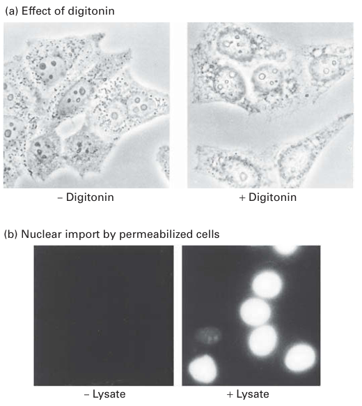
| Digitonin | 洋地黄皂苷 |
| + Lysate | +裂解物 |
| − Lysate | −裂解物 |
| Effect of digitonin | 洋地黄皂苷的作用 |
| Nuclear import by permeabilized cells | 通透化细胞的核输入 |
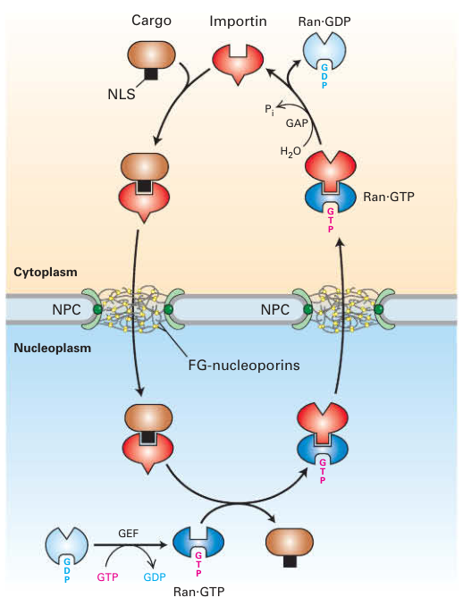
| Nucleoplasm | 核质 |
| Cytoplasm | 细胞质 |
| NPC | 核孔复合体 |
| FG-nucleoporins | FG核孔蛋白 |
| Ran⋅GTP | Ran⋅GTP |
| Ran⋅GDP | Ran⋅GDP |
| Cargo | 货物 |
| NLS | 核定位信号 |
| Importin | 输入蛋白 |
| GAP | GAP |
| GEF | GEF |
| GTP | GTP |
| GDP | GDP |
| Pi | Pi |
| H2O | H2O |
由一种称为输入蛋白的核转运受体介导的细胞质货物蛋白输入机制如图13-36所示。细胞质中游离的输入蛋白与货物蛋白上同源的NLS结合，形成输入蛋白-货物复合物。当输入蛋白与FG重复序列相互作用时，货物复合物便转位穿过NPC通道。货物复合物迅速到达核质，在那里输入蛋白与Ran⋅GTP相互作用，引起输入蛋白构象改变，从而置换出NLS，把货物蛋白释放到核质中。输入蛋白-Ran⋅GTP复合物随后扩散返回穿过NPC。一旦输入蛋白-Ran⋅GTP复合物到达NPC的胞质侧，Ran便与一种特异性的GTP酶激活蛋白（Ran-GAP）相互作用，后者是NPC胞质丝的一个组分。这一相互作用刺激Ran把它结合的GTP水解为GDP，使Ran转变为对输入蛋白低亲和力的构象，于是输入蛋白被释放到细胞质中，在那里它可以参与下一轮输入。Ran⋅GDP穿过孔返回核质，在那里遇到一种特异性的鸟嘌呤核苷酸交换因子（Ran-GEF），后者使Ran释放其结合的GDP而换结合GTP。这一系列反应的净结果是把GTP的水解与携带NLS的蛋白质从细胞质向核内的转移偶联起来，从而提供驱动核输入的能量。
尽管输入蛋白-货物复合物是通过随机扩散穿过核孔的，但货物进入细胞核的整体转运过程是单向的。由于复合物到达核质时迅速解离，NPC两侧存在输入蛋白-货物复合物的浓度梯度：在复合物组装之处即细胞质中浓度高，在复合物解离之处即核质中浓度低。这一浓度梯度造成了核输入的单向性。类似的浓度梯度负责驱动输入蛋白从细胞核返回细胞质。输入蛋白-Ran⋅GTP复合物的浓度在它组装的核质中高于它解离的NPC胞质侧。最终，转运过程的方向取决于Ran-GEF主要位于核质、而Ran-GAP主要位于细胞质。核质中的Ran-GEF使Ran维持在Ran⋅GTP状态，在那里它促进货物复合物解离。NPC胞质侧的Ran-GAP把Ran⋅GTP转变为Ran⋅GDP，使输入蛋白-Ran⋅GTP复合物解离，把游离的输入蛋白释放到胞质溶胶中。
第二类核转运受体护送含核输出信号的蛋白质出细胞核
一种与我们刚才所述非常相似的机制被用来把蛋白质、tRNA和核糖体亚基从细胞核输出到细胞质。这一机制最初是通过研究某些在细胞核与细胞质之间穿梭的核糖核蛋白复合物而被阐明的。这类"穿梭"蛋白除了含有一个使其被摄取入核的NLS之外，还含有一个核输出信号（NES），后者刺激它们通过核孔从细胞核输出到细胞质。用编码一个核内限定蛋白与穿梭蛋白各片段融合而成的工程化杂合基因进行的实验，已鉴定出至少三种不同类型的NES：在PKI（一种蛋白激酶A的抑制物）以及人类免疫缺陷病毒（HIV）的Rev蛋白中发现的一段富含亮氨酸的序列，和在两种不同的异质核糖核蛋白颗粒（hnRNP）中鉴定出的另外两段序列。精确的决定每种序列被识别以进行核输出的结构特征，仍了解甚少。
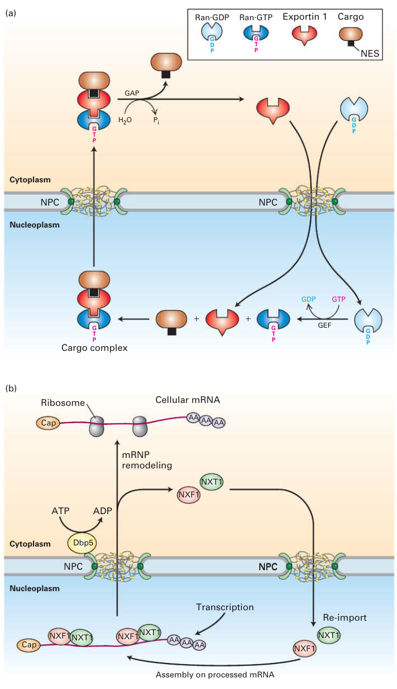
| Ran⋅GTP | Ran⋅GTP |
| Ran⋅GDP | Ran⋅GDP |
| Nucleoplasm | 核质 |
| Cytoplasm | 细胞质 |
| Cargo complex | 货物复合物 |
| NES | 核输出信号 |
| Exportin 1 | 输出蛋白1 |
| GAP | GAP |
| GEF | GEF |
| ATP | ATP |
| NPC | 核孔复合体 |
| Ribosome | 核糖体 |
| Dbp5 | Dbp5 |
| NXF1 | NXF1 |
| NXT1 | NXT1 |
| Assembly on processed mRNA | 在加工后的mRNA上组装 |
| Re-import | 再输入 |
| mRNP remodeling | mRNP重塑 |
对于含有富含亮氨酸NES的穿梭蛋白，其从细胞核输出的机制了解得最为清楚。根据图13-37a所示的当前模型，一种称为输出蛋白1的特异性核转运受体首先在细胞核中与Ran⋅GTP形成复合物，然后结合货物蛋白上的NES。输出蛋白1与Ran⋅GTP的结合引起输出蛋白1构象改变，增加其对NES的亲和力，从而形成三分子货物复合物。与其他核转运受体一样，输出蛋白1与FG核孔蛋白中的FG重复序列瞬时相互作用，并扩散通过NPC。当货物复合物遇到与NPC胞质丝相连的Ran-GAP时便解离，Ran-GAP刺激Ran水解其结合的GTP，使Ran转变为对输出蛋白1低亲和力的构象。Ran⋅GDP从三分子货物复合物解离后，输出蛋白1改变构象，变为对NES低亲和力的状态，把货物释放到胞质溶胶中。输出过程的方向由细胞质中货物与输出蛋白1的这种解离所驱动，它在NPC两侧造成货物复合物的浓度梯度：核质中高，细胞质中低。输出蛋白1和Ran⋅GDP随后通过NPC被转运回细胞核。
把这一核输出模型与图13-36中的核输入模型相比较，我们可以看到一处明显的差别：在输出过程中Ran⋅GTP是货物复合物的一部分，而在输入过程中则不是。除此差别之外，这两种转运过程极为相似。在两个过程中，核转运受体在核质中与Ran⋅GTP结合都会引起构象改变，从而影响其与转运信号的亲和力。在输入过程中，这种相互作用导致货物释放；而在输出过程中，这种相互作用则促进与货物的结合。无论在输出还是输入中，Ran-GAP在细胞质中刺激Ran⋅GTP水解都会使Ran发生构象改变，从而释放核转运受体。在核输出过程中，货物也随之释放。Ran-GAP定位于细胞质、Ran-GEF定位于细胞核，是货物蛋白跨NPC单向输入和输出的基础。
与其功能上的相似性一致，两类核转运受体——输入蛋白和输出蛋白——在序列和结构上高度同源。核转运受体家族在酵母中有14个成员，在哺乳动物细胞中有20多个。人们只确定了其中一小部分受体所结合的NES或NLS。有些单个核转运受体同时兼具输入和输出功能。
一种类似的穿梭机制已被证明能把其他货物输出细胞核。例如，输出蛋白t的功能是输出tRNA。输出蛋白t与Ran⋅GTP形成复合物结合完全加工好的tRNA，该复合物扩散通过NPC，并在与NPC胞质丝中的Ran-GAP相互作用时解离，把tRNA释放到胞质溶胶中。一旦蛋白质和RNA组分在核仁中被正确组装，核糖体亚基通过NPC输出细胞核也需要一个依赖Ran的过程。同样，某些与特定hnRNP蛋白结合的特定mRNA也可以通过依赖Ran的机制被输出。
大多数mRNA通过不依赖Ran的机制输出细胞核
mRNA在细胞核中加工完成后，仍与特定蛋白质结合，形成信使核糖核蛋白复合物（mRNP）。把mRNP输出细胞核的主要转运体是mRNP输出蛋白，这是一种异二聚体蛋白，由一个大亚基（称为核输出因子1，NXF1）和一个小亚基（称为核输出转运体1，NXT1）组成。多个NXF1/NXT1二聚体通过与RNA以及其他mRNP衔接蛋白的协同相互作用而结合核内mRNP，这些衔接蛋白在转录延伸和pre-mRNA加工期间与新生pre-mRNA结合。在许多方面，NXF1/NXT1的亚基就像一种结合NLS或NES的核转运受体，因为这两个亚基都与FG核孔蛋白的FG重复序列相互作用，而这种相互作用使它们能够扩散通过NPC的中央通道。
mRNP输出过程不需要Ran，因此mRNA单向转运出核所需的能量来源不是Ran对GTP的水解。一旦mRNP-NXF1/NXT1复合物到达NPC的胞质侧，NXF1和NXT1便在RNA解旋酶Dbp5的帮助下从mRNP上解离，Dbp5与胞质NPC丝相连。回忆一下，RNA解旋酶利用ATP水解产生的能量沿RNA分子移动，分开双链RNA链并解离RNA-蛋白质复合物（见第5章）。这就引出一种简单的想法：与核孔复合体胞质侧相连的Dpb5作为一种ATP驱动的马达，在mRNP复合物出现在NPC胞质侧时把NXF1/NXT1从中移除。NXF1/NXT1在NPC核质侧组装到mRNP上，随后又在NPC胞质侧以ATP依赖的方式从mRNP上移除，由此形成mRNP-NXF1/NXT1的浓度梯度，驱动单向输出。从mRNP上移除后，被Dbp5解旋酶从mRNA上剥落的游离NXF1和NXT1亚基，通过一个依赖Ran和核转运受体的过程被输入回细胞核（图13-37b）。
在依赖Ran的核输出中（已在上一个小节讨论），Ran在NPC胞质侧水解GTP，导致核转运受体与其货物解离。就其基本轮廓而言，这里讨论的不依赖Ran的核输出以相似的机制运行，只不过NPC胞质侧的Dbp5p利用ATP水解来使mRNP输出蛋白与mRNA解离。
- 核被膜上含有许多核孔复合体（NPC），它们是由30种不同蛋白质（称为核孔蛋白）的多个拷贝组成的大型复杂结构（见图13-33）。FG核孔蛋白含有多个短疏水序列（FG重复序列）的重复，衬于中央转运通道，在所有大分子通过核孔的转运中发挥作用。
- 大于40 kDa的大分子通过核孔的转运，需要核转运受体的协助，这些受体既与被转运的分子相互作用，也与FG核孔蛋白的FG重复序列相互作用。
- 被输入细胞核或从细胞核输出的蛋白质含有特定的氨基酸序列，起核定位信号（NLS）或核输出信号（NES）的作用。核内限定蛋白含有NLS但不含NES，而在细胞核与细胞质之间穿梭的蛋白质则同时含有这两种信号。
- 已鉴定出若干不同类型的NES和NLS。每一类核转运信号被认为与一种特异性的核转运受体相互作用，这些受体属于一个同源蛋白家族。
- 携带NES或NLS的货物蛋白与其同源的核转运受体结合后转位通过核孔。核转运受体与FG重复序列之间的瞬时相互作用，使核转运受体-货物复合物能非常快速地扩散通过NPC的中央通道，该通道充满由FG重复序列构成的疏水基质。
- 蛋白质通过核孔的输出与输入之所以是单向的，源于Ran的参与；Ran是一种单体G蛋白，与GTP或GDP结合时存在不同的构象。Ran鸟嘌呤核苷酸交换因子（Ran-GEF）位于细胞核、Ran GTP酶激活蛋白（Ran-GAP）位于细胞质，由此形成一个梯度：核质中Ran⋅GTP浓度高，细胞质中Ran⋅GDP浓度高。货物复合物在核质中与Ran⋅GTP相互作用会导致复合物解离，把货物释放到核质中（见图13-36）；而输出货物复合物的组装则由核质中与Ran⋅GTP的相互作用所促进（见图13-37）。
- 大多数mRNP在核质中与一种异二聚体mRNP输出蛋白结合而被输出细胞核，该输出蛋白与FG重复序列相互作用。转运方向（从细胞核到细胞质）源于一种与NPC胞质丝相连的RNA解旋酶的作用，一旦转运复合物到达细胞质，该解旋酶就把异二聚体mRNP输出蛋白移除。
访问LaunchPad可获取学习工具并进一步了解本章内容：展望未来、分析数据，以及包括视频、动画和测验在内的附加学习工具。
关键术语
复习题
- 1.在早期关于分泌蛋白翻译的研究中得到了以下结果。根据我们如今对这一过程的了解，解释每个结果出现的原因。
a. 仅由mRNA和核糖体组成的体外翻译系统所得到的分泌蛋白，比在细胞中翻译同一种蛋白时得到的产物更大。
b. 一个同样含有微粒体的类似系统所产生的分泌蛋白，其大小与在细胞中发现的相同。
c. 如果在体外翻译之后才加入微粒体，合成的蛋白又比在细胞中生成的更大。 - 2.描述下列过程中跨膜单向转位所需的能量来源：(a) 向内质网（ER）的共翻译转位；(b) 向ER的翻译后转位；(c) 向线粒体基质的转位。
- 3.向大多数细胞器的转位通常需要一种或多种胞质溶胶蛋白的活性。请描述分别用于向内质网、线粒体和过氧化物酶体转位的三种不同胞质因子的基本功能。
- 4.描述用于识别蛋白质内拓扑发生序列的典型原则，以及如何利用这些原则开发计算机算法。拓扑发生序列的识别如何导致对多次跨膜蛋白膜内排布的预测？相对于信号锚定序列的膜取向，正电荷的排布为什么重要？
- 5.内质网中大量错误折叠的蛋白可导致未折叠蛋白反应（UPR）和内质网相关降解（ERAD）途径被激活。UPR通过改变哪一类基因的表达来减少未折叠蛋白的数量？ERAD可能以哪一种方式识别错误折叠的蛋白？为什么必须把这些错误折叠的蛋白脱位到细胞质中？
- 6.已分离到温度敏感型酵母突变体，它们分别阻断N-连接糖基化所需多萜醇连接寡糖前体合成中的每一个酶促步骤。请提出一种解释，说明为什么阻断结构为dolichol-PP-(GlcNAc)2Man5的中间产物合成的突变会完全阻止N-连接寡糖链加到分泌蛋白上，而阻断该中间产物转变成完整前体——dolichol-PP-(GlcNAc)2Man9Glc3——的突变却允许N-连接寡糖链加到分泌性糖蛋白上。
- 7.请说出四种在内质网腔内促进分泌蛋白修饰或折叠的不同蛋白。指出这些蛋白中哪些对底物蛋白进行共价修饰，哪些只引起底物蛋白的构象变化。
- 8.描述在下列类型的线粒体突变体中，线粒体基质蛋白的前体会发生什么：(a) Tom22信号受体突变；(b) Tom70信号受体突变；(c) 基质Hsp70突变；(d) 基质信号肽酶突变。
- 9.描述输入线粒体基质与输入叶绿体基质的机制之间的相同点和不同点。
- 10.设计一组使用嵌合蛋白的实验，该嵌合蛋白由线粒体前体蛋白与二氢叶酸还原酶（DHFR）融合而成，用这些实验可以确定前体蛋白必须有多少部分伸入线粒体基质，基质靶向序列才能被基质加工蛋白酶切除。
- 11.过氧化物酶体含有利用分子氧氧化各种底物的酶，但在此过程中会生成过氧化氢——一种能损伤DNA和蛋白质的化合物。负责把过氧化氢分解为水的酶叫什么名字？这种蛋白输入过氧化物酶体的机制是什么？还涉及哪些其他蛋白？
- 12.假设你鉴定出一株缺乏功能性过氧化物酶体的新突变细胞系。请描述你可以如何通过实验确定，该突变体的缺陷主要在于过氧化物酶体膜蛋白的插入/组装，还是在于基质蛋白。
- 13.大于40 kDa的蛋白质入核需要什么氨基酸序列的存在？描述入核的机制。核转运受体如何能够穿过核孔复合体？
- 14.为什么把Ran-GAP定位在细胞核内、把Ran-GEF定位在细胞质中，是含核输出信号（NES）的货物蛋白单向运输所必需的？
参考文献
蛋白质向ER膜的靶向与跨膜转运
Egea, P. F., R. M. Stroud, and P. Walter. 2005. Targeting proteins to membranes: structure of the signal recognition particle. Curr. Opin. Struct. Biol.15:213–220.
Osborne, A. R., T. A. Rapoport, and B. van den Berg. 2005. Protein translocation by the Sec61/SecY channel. Annu. Rev. Cell Dev. Biol.21:529–550.
Wickner, W., and R. Schekman. 2005. Protein translocation across biological membranes. Science310:1452–1456.
膜蛋白插入内质网
Englund, P. T. 1993. The structure and biosynthesis of glycosylphosphatidylinositol protein anchors. Annu. Rev. Biochem. 62:121–138.
Mothes, W., et al. 1997. Molecular mechanism of membrane protein integration into the endoplasmic reticulum. Cell89:523–533.
Shao, S., and R. S. Hegde. 2011. Membrane protein insertion at the endoplasmic reticulum. Annu. Rev. Cell Dev. Biol. 27:25–56.
Wang, F., et al. 2011. The mechanism of tail-anchored protein insertion into the ER membrane. Mol. Cell43:738–750.
内质网中的蛋白质修饰、折叠与质量控制
Braakman, I., and N. J. Bulleid. 2011. Protein folding and modification in the mammalian endoplasmic reticulum. Annu. Rev. Biochem.80:71–99.
Hegde, R. S., and H. L. Ploegh. 2010. Quality and quan- tity control at the endoplasmic reticulum. Curr. Opin. Cell Biol. 22:437–446.
Helenius, A., and M. Aebi. 2004. Roles of N-linked glycans in the endoplasmic reticulum. Annu. Rev. Biochem.73:1019–1049.
Kornfeld, R., and S. Kornfeld. 1985. Assembly of asparagine- linked oligosaccharides. Annu. Rev. Biochem.45:631–664.
Patil, C., and P. Walter. 2001. Intracellular signaling from the endoplasmic reticulum to the nucleus: the unfolded protein response in yeast and mammals. Curr. Opin. Cell Biol.13:349–355.
Sevier, C. S., and C. A. Kaiser. 2002. Formation and transfer of disulphide bonds in living cells. Nat. Rev. Mol. Cell Biol.3:836–847.
Smith, M. H., H. L. Ploegh, and J. S. Weissman. 2011. Road to ruin: targeting proteins for degradation in the endoplasmic reticulum. Science334:1086–1090.
蛋白质向线粒体与叶绿体的靶向
Dalbey, R. E., and A. Kuhn. 2000. Evolutionarily related insertion pathways of bacterial, mitochondrial, and thylakoid membrane proteins. Annu. Rev. Cell Dev. Biol.16:51–87.
Dolezal, P., et al. 2006. Evolution of the molecular machines for protein import into mitochondria. Science313:314–318.
Koehler, C. M. 2004. New developments in mitochondrial assembly. Annu. Rev. Cell Dev. Biol.20:309–335.
Li, H.-M., and C.-C. Chiu. 2010. Protein transport into chloroplasts. Ann. Rev. Plant Biol. 61:157–180.
Matouschek, A., N. Pfanner, and W. Voos. 2000. Protein unfolding by mitochondria: the Hsp70 import motor. EMBO Rep. 1:404–410.
Neupert, W., and M. Brunner. 2002. The protein import motor of mitochondria. Nat. Rev. Mol. Cell Biol.3:555–565.
Robinson, C., and A. Bolhuis. 2001. Protein targeting by the twin-arginine translocation pathway. Nat. Rev. Mol. Cell Biol. 2:350–356.
Schmidt, O., N. Pfanner, and C. Meisinger. 2010. Mitochondrial protein import: from proteomics to functional mechanisms. Nat. Rev. Mol. Cell Biol.11:655–667.
过氧化物酶体蛋白的靶向
Dammai, V., and S. Subramani. 2001. The human peroxisomal targeting signal receptor, Pex5p, is translocated into the peroxisomal matrix and recycled to the cytosol. Cell105:187–196.
Gould, S. J., and D. Valle. 2000. Peroxisome biogenesis disorders: genetics and cell biology. Trends Genet.16:340–345.
Hoepfner, D., et al. 2005. Contribution of the endoplasmic reticulum to peroxisome formation. Cell122:85–95.
Ma, C., G. Agrawal, and S. Subramani. 2011. Peroxisome assembly: matrix and membrane protein biogenesis. J. Cell Biol. 193:7–16.
Purdue, P. E., and P. B. Lazarow. 2001. Peroxisome biogenesis. Annu. Rev. Cell Dev. Biol.17:701–752.
Smith, J. J., and J. D. Aitchison. 2013. Peroxisomes take shape. Nat. Rev. Mol. Cell Biol. 14:803–817.
进出细胞核的运输
Chook, Y. M., and G. Blobel. 2001. Karyopherins and nuclear import. Curr. Opin. Struct. Biol.11:703–715.
Cole, C. N., and J. J. Scarcelli. 2006. Transport of messenger RNA from the nucleus to the cytoplasm. Curr. Opin. Cell Biol.18:299–306.
Johnson, A. W., E. Lund, and J. Dahlberg. 2002. Nuclear export of ribosomal subunits. Trends Biochem. Sci.27:580–585.
Ribbeck, K., and D. Gorlich. 2001. Kinetic analysis of translo- cation through nuclear pore complexes. EMBO J.20:1320–1330.
Rout, M. P., and J. D. Aitchison. 2001. The nuclear pore complex as a transport machine. J. Biol. Chem.276:16593–16596.
Schwartz, T. U. 2005. Modularity within the architecture of the nuclear pore complex. Curr. Opin. Struct. Biol.15:221–226.
Stewart, M. 2010. Nuclear export of mRNA. Trends Biochem. Sci.35:609–617.
Terry, L. J., and S. R. Wente. 2009. Flexible gates: dynamic topologies and functions for FG nucleoporins in nucleocytoplasmic transport. Eukaryot. Cell8:1814–1827.